Weighted Derivative-Enhanced Gaussian Process (WDEGP)#
Weighted Individual Submodel Framework#
Overview#
The Weighted Derivative-Enhanced Gaussian Process (WDEGP) extends the DEGP framework by constructing individual Gaussian Process submodels. Each submodel is trained to interpolate the function values at all training locations and derivative information at a subset of training locations. The global prediction is obtained through a weighted aggregation of these local models.
Submodel Construction:
Each submodel \(k\) is a Gaussian Process that interpolates:
The function values at all training points \(\{\mathbf{x}_1, \mathbf{x}_2, \ldots, \mathbf{x}_N\}\)
Derivative information (up to a specified order) at selected training locations
This ensures that each submodel \(y_k(\mathbf{x})\) satisfies both the global function interpolation conditions and its assigned local derivative constraints.
Global Model:
The global prediction is formed as a weighted combination of the submodels:
where \(M\) is the number of submodels and \(1 \leq M \leq N\)
Global Interpolation Guarantee:
The weighting functions \(w_k(\mathbf{x})\) are constructed to satisfy a partition of unity with the Kronecker delta property:
This means that at each training point \(\mathbf{x}_i\):
Only the corresponding submodel \(j=i\) contributes (with weight \(w_i(\mathbf{x}_i) = 1\))
All other submodels have zero weight (\(w_k(\mathbf{x}_i) = 0\) for \(k \neq i\))
Consequence: Since each submodel interpolates its training data, and the weighting scheme ensures that only submodel \(i\) contributes at training point \(\mathbf{x}_i\), the global WDEGP model inherits the interpolation properties of the individual submodels. Therefore, the global model is mathematically guaranteed to interpolate both function values and derivatives at all training points where these constraints are imposed.
Note on Derivative Verification:
While the global model is guaranteed to interpolate derivatives through this construction, we verify derivatives on individual submodels directly to avoid numerical artifacts that could arise from finite differencing the weighting functions.
This formulation enables:
Improved scalability with problem dimension: Each submodel is trained on a localized subset of data rather than the full global dataset, significantly reducing computational cost in high-dimensional problems
Local adaptation to nonlinearities and curvature
Consistent inclusion of higher-order derivative information
Smooth global approximations that respect local dynamics
Parallelizable submodel evaluations
—
Example 1: 1D Weighted DEGP with Individual Submodels#
This tutorial demonstrates WDEGP on a 1D oscillatory function with trend, using second-order derivatives to enhance smoothness and predictive accuracy. In particular, we consider 10 training points and construct 10 corresponding submodels—one centered at each training point.
Step 1: Import required packages#
import numpy as np
import matplotlib.pyplot as plt
import pyoti.sparse as oti
from wdegp.wdegp import wdegp
import utils
Explanation: We import the required modules for numerical operations, visualization, and automatic differentiation. The `wdegp` class constructs the weighted submodel GP, while `utils` provides supporting routines.
—
Step 2: Define the example function#
def oscillatory_function_with_trend(X, alg=oti):
x1 = X[:, 0]
return alg.sin(10 * np.pi * x1) / (2 * x1) + (x1 - 1) ** 4
Explanation: This benchmark function combines an oscillatory component with a smooth polynomial trend, presenting both local and global complexity for the GP model to capture.
—
Step 3: Set experiment parameters#
n_bases = 1
n_order = 2
lb_x = 0.5
ub_x = 2.5
num_points = 10
Explanation: Since this is a one-dimensional problem, we set n_bases = 1. We use second-order derivatives, thus n_order = 2. The 10 training points will be uniformly distributed between 0.5 and 2.5.
—
Step 4: Generate training points#
X_train = np.linspace(lb_x, ub_x, num_points).reshape(-1, 1)
print("Training points:", X_train.ravel())
Training points: [0.5 0.72222222 0.94444444 1.16666667 1.38888889 1.61111111
1.83333333 2.05555556 2.27777778 2.5 ]
Explanation: Each training point will form the center of a local submodel that contributes to the overall WDEGP prediction.
—
Step 5: Create individual submodel structure#
submodel_indices = [[i] for i in range(num_points)]
base_derivative_indices = utils.gen_OTI_indices(n_bases, n_order)
derivative_specs = [base_derivative_indices for _ in range(num_points)]
print(f"Number of submodels: {len(submodel_indices)}")
print(f"Derivative types per submodel: {len(base_derivative_indices)}")
Number of submodels: 10
Derivative types per submodel: 2
Explanation:
In this example, each submodel corresponds to a single training point, i.e., each submodel
interpolates all of the function values and derivatives at one specific training location.
The function gen_OTI_indices constructs the complete set of labels corresponding
to all partial derivatives of a d-dimensional function up to a specified order p.
Within the WDEGP framework, each submodel employs a distinct subset of these labels
to define the specific derivatives utilized in its formulation, thereby providing
flexibility in the selection and incorporation of derivative information across submodels.
The submodel_indices list indicates which training point(s) is associated with each submodel.
In this example, submodel_indices = [[0], [1], …, [9]], meaning:
- Submodel 1 incorporates all function values and derivative information at training point 0,
- Submodel 2 incorporates all function values and derivative information at training point 1,
- … and so on for all submodels.
This indexing ensures that each submodel is uniquely tied to its corresponding training location while still having access to the full set of function values.
The derivative_specs list specifies which derivatives each submodel will include.
Each entry corresponds to one submodel and contains a subset of the labels generated by
gen_OTI_indices, indicating the particular derivatives incorporated at that submodel’s
training point(s). In this example, each submodel uses the full set of first- and second-order
derivatives, but the framework allows flexibility for submodels to include only a subset
or higher-order derivatives depending on local function behavior.
Together, submodel_indices and derivative_specs define both the location and
derivative information for each submodel, enabling a fine-grained, weighted combination
of local GP models that captures local behavior while providing a globally accurate approximation.
—
Step 6: Compute analytic derivatives and prepare submodel data#
import numpy as np
import sympy as sp
# ------------------------------------------------------------
# Define the example function symbolically
# ------------------------------------------------------------
x = sp.symbols('x')
f_sym = sp.sin(10 * sp.pi * x) / (2 * x) + (x - 1)**4
# Compute first and second derivatives symbolically
f1_sym = sp.diff(f_sym, x)
f2_sym = sp.diff(f_sym, x, 2)
# Convert to callable NumPy functions
f_fun = sp.lambdify(x, f_sym, "numpy")
f1_fun = sp.lambdify(x, f1_sym, "numpy")
f2_fun = sp.lambdify(x, f2_sym, "numpy")
# ------------------------------------------------------------
# Define experiment parameters
# ------------------------------------------------------------
lb_x, ub_x = 0.5, 2.5
num_points = 10
X_train = np.linspace(lb_x, ub_x, num_points).reshape(-1, 1)
# Each submodel corresponds to one training point
submodel_indices = [[i] for i in range(num_points)]
# ------------------------------------------------------------
# Compute function values and derivatives
# ------------------------------------------------------------
y_function_values = f_fun(X_train.flatten()).reshape(-1, 1)
submodel_data = []
for k, idx in enumerate(submodel_indices):
X_point = X_train[idx].reshape(-1)
xval = float(X_point[0])
# Compute derivatives analytically at the submodel point
d1 = np.array([[f1_fun(xval)]]) # First derivative
d2 = np.array([[f2_fun(xval)]]) # Second derivative
# Append [all function values] + [local derivatives]
submodel_data.append([y_function_values] + [d1, d2])
# ------------------------------------------------------------
# Display results for verification
# ------------------------------------------------------------
print("Training points (X_train):")
print(X_train.flatten())
print("\nFunction values (y_function_values):")
print(y_function_values.flatten())
print("\nExample submodel data for first training point:")
for i, data in enumerate(submodel_data[0]):
print(f" Element {i}: {data.flatten()}")
Training points (X_train):
[0.5 0.72222222 0.94444444 1.16666667 1.38888889 1.61111111
1.83333333 2.05555556 2.27777778 2.5 ]
Function values (y_function_values):
[ 0.0625 -0.43905306 -0.52135928 -0.37038214 -0.10025536 0.24561416
0.71844183 1.48098397 2.80686142 5.0625 ]
Example submodel data for first training point:
Element 0: [ 0.0625 -0.43905306 -0.52135928 -0.37038214 -0.10025536 0.24561416
0.71844183 1.48098397 2.80686142 5.0625 ]
Element 1: [-31.91592654]
Element 2: [128.66370614]
Explanation: This step computes the analytic first and second derivatives of the training function using symbolic differentiation in SymPy. The full set of function values is shared across all submodels, while each submodel includes only the derivatives evaluated at its corresponding training point.
The training data for each submodel is determined by the combination of
submodel_indices and derivative_specs. Each submodel corresponds to a single
training point, as indicated by submodel_indices (e.g., [[0], [1], …, [9]]), and
the specific derivatives included are defined by derivative_specs. In this example,
each submodel incorporates all first- and second-order derivatives at its assigned
training point.
—
Step 7: Build weighted derivative-enhanced GP#
normalize = True
kernel = "SE"
kernel_type = "anisotropic"
gp_model = wdegp(
X_train,
submodel_data,
n_order,
n_bases,
submodel_indices,
derivative_specs,
normalize=normalize,
kernel=kernel,
kernel_type=kernel_type
)
Explanation: The WDEGP model is constructed by initializing the weighted Gaussian Process with:
Training locations (X_train): The spatial coordinates where function and derivative data are available
Submodel data (submodel_data): The function values and derivatives for each submodel
Derivative specifications (derivative_specs): Defines which derivatives are included in each submodel
Submodel indices (submodel_indices): Specifies which training points are included in each submodel
Kernel configuration: We use a squared exponential (SE) kernel with anisotropic length scales, allowing different smoothness in different directions
Normalization: Input normalization is enabled to improve numerical stability and kernel parameter optimization
The model will aggregate the individual submodels using a weighted combination where the weights form a partition of unity. This ensures that:
Each submodel contributes most strongly near its associated training point
The global prediction smoothly transitions between submodels
Interpolation conditions are satisfied at all training locations
The kernel hyperparameters will be optimized during training to balance local accuracy and global smoothness.
—
Step 8: Optimize hyperparameters#
params = gp_model.optimize_hyperparameters(
optimizer='pso',
pop_size = 100,
n_generations = 15,
local_opt_every = None,
debug = False
)
print("Optimized hyperparameters:", params)
Stopping: maximum iterations reached --> 15
Optimized hyperparameters: [ 7.96024999e-01 -8.16485059e-03 -1.21654899e+01]
Explanation: The kernel hyperparameters are tuned by maximizing the log marginal likelihood. Particle Swarm Optimization ensures robustness against local minima.
—
Step 9: Evaluate model performance#
X_test = np.linspace(lb_x, ub_x, 250).reshape(-1, 1)
y_pred, y_cov, submodel_vals, submodel_cov = gp_model.predict(
X_test, params, calc_cov=True, return_submodels=True
)
y_true = oscillatory_function_with_trend(X_test, alg=np)
nrmse = utils.nrmse(y_true, y_pred)
print(f"NRMSE: {nrmse:.6f}")
NRMSE: 0.010597
Explanation: Predictions are made over a dense test grid. The Normalized Root Mean Square Error (NRMSE) measures how well the model reproduces the true function.
Step 10: Verify interpolation of training data#
# ------------------------------------------------------------
# Verify function value interpolation
# ------------------------------------------------------------
y_pred_train = gp_model.predict(X_train, params, calc_cov=False)
print("Function value interpolation errors:")
print("=" * 80)
for i in range(num_points):
error_abs = abs(y_pred_train[0, i] - y_function_values[i, 0])
error_rel = error_abs / abs(y_function_values[i, 0]) if y_function_values[i, 0] != 0 else error_abs
print(f"Point {i} (x={X_train[i, 0]:.3f}): Abs Error = {error_abs:.2e}, Rel Error = {error_rel:.2e}")
max_func_error = np.max(np.abs(y_pred_train.flatten() - y_function_values.flatten()))
print(f"\nMaximum absolute function value error: {max_func_error:.2e}")
# ------------------------------------------------------------
# Verify derivative interpolation using finite differences
# on individual submodels (before weighted combination)
# ------------------------------------------------------------
print("\n" + "=" * 80)
print("Derivative interpolation verification:")
print("=" * 80)
print("Note: Verifying derivatives on individual submodels before weighted combination")
print(" to avoid numerical instabilities from the weighting function")
print("=" * 80)
# Use small perturbation for finite differences
h = 1e-6
for i, idx in enumerate(submodel_indices):
x_point = X_train[idx].flatten()[0]
# Get predictions at perturbed points from individual submodels
X_plus = np.array([[x_point + h]])
X_minus = np.array([[x_point - h]])
X_center = X_train[idx].reshape(1, -1)
# Get predictions from individual submodels (not weighted combination)
_, submodel_vals_plus = gp_model.predict(X_plus, params, calc_cov=False, return_submodels=True)
_, submodel_vals_minus = gp_model.predict(X_minus, params, calc_cov=False, return_submodels=True)
_, submodel_vals_center = gp_model.predict(X_center, params, calc_cov=False, return_submodels=True)
# First derivative via central difference on the i-th submodel
fd_first_deriv = (submodel_vals_plus[i][0, 0] - submodel_vals_minus[i][0, 0]) / (2 * h)
analytic_first_deriv = submodel_data[i][1][0, 0]
error_first_abs = abs(fd_first_deriv - analytic_first_deriv)
error_first_rel = error_first_abs / abs(analytic_first_deriv) if analytic_first_deriv != 0 else error_first_abs
# Second derivative via central difference on the i-th submodel
fd_second_deriv = (submodel_vals_plus[i][0, 0] - 2 * submodel_vals_center[i][0, 0] + submodel_vals_minus[i][0, 0]) / (h ** 2)
analytic_second_deriv = submodel_data[i][2][0, 0]
error_second_abs = abs(fd_second_deriv - analytic_second_deriv)
error_second_rel = error_second_abs / abs(analytic_second_deriv) if analytic_second_deriv != 0 else error_second_abs
print(f"\nSubmodel {i} at Point {i} (x = {x_point:.3f}):")
print(f" 1st derivative - Analytic: {analytic_first_deriv:+.6f}, FD: {fd_first_deriv:+.6f}")
print(f" Abs Error: {error_first_abs:.2e}, Rel Error: {error_first_rel:.2e}")
print(f" 2nd derivative - Analytic: {analytic_second_deriv:+.6f}, FD: {fd_second_deriv:+.6f}")
print(f" Abs Error: {error_second_abs:.2e}, Rel Error: {error_second_rel:.2e}")
print("\n" + "=" * 80)
print("Interpolation verification complete!")
print("Relative errors should be close to machine precision (< 1e-6)")
print("\n" + "=" * 80)
print("SUMMARY:")
print(f" - Function values: enforced at all {num_points} training points")
print(f" - First derivatives: verified on individual submodels at all {num_points} points")
print(f" - Second derivatives: verified on individual submodels at all {num_points} points")
print(f" - Each submodel: 1 training point with full derivative information")
print(f" - Total submodels: {num_points}")
print(f" - Verification method: Finite differences on submodels before weighting")
print("=" * 80)
Function value interpolation errors:
================================================================================
Point 0 (x=0.500): Abs Error = 5.55e-17, Rel Error = 8.88e-16
Point 1 (x=0.722): Abs Error = 8.33e-16, Rel Error = 1.90e-15
Point 2 (x=0.944): Abs Error = 5.55e-16, Rel Error = 1.06e-15
Point 3 (x=1.167): Abs Error = 2.22e-16, Rel Error = 6.00e-16
Point 4 (x=1.389): Abs Error = 4.72e-16, Rel Error = 4.71e-15
Point 5 (x=1.611): Abs Error = 1.67e-16, Rel Error = 6.78e-16
Point 6 (x=1.833): Abs Error = 2.22e-16, Rel Error = 3.09e-16
Point 7 (x=2.056): Abs Error = 0.00e+00, Rel Error = 0.00e+00
Point 8 (x=2.278): Abs Error = 4.44e-16, Rel Error = 1.58e-16
Point 9 (x=2.500): Abs Error = 8.88e-16, Rel Error = 1.75e-16
Maximum absolute function value error: 8.88e-16
================================================================================
Derivative interpolation verification:
================================================================================
Note: Verifying derivatives on individual submodels before weighted combination
to avoid numerical instabilities from the weighting function
================================================================================
Submodel 0 at Point 0 (x = 0.500):
1st derivative - Analytic: -31.915927, FD: -31.915927
Abs Error: 1.28e-09, Rel Error: 4.00e-11
2nd derivative - Analytic: +128.663706, FD: +128.659305
Abs Error: 4.40e-03, Rel Error: 3.42e-05
Submodel 1 at Point 1 (x = 0.722):
1st derivative - Analytic: -16.130645, FD: -16.130645
Abs Error: 5.14e-10, Rel Error: 3.18e-11
2nd derivative - Analytic: +484.562101, FD: +484.564611
Abs Error: 2.51e-03, Rel Error: 5.18e-06
Submodel 2 at Point 2 (x = 0.944):
1st derivative - Analytic: -2.336758, FD: -2.336758
Abs Error: 1.24e-10, Rel Error: 5.31e-11
2nd derivative - Analytic: +519.554404, FD: +519.553067
Abs Error: 1.34e-03, Rel Error: 2.57e-06
Submodel 3 at Point 3 (x = 1.167):
1st derivative - Analytic: +7.068635, FD: +7.068635
Abs Error: 8.42e-10, Rel Error: 1.19e-10
2nd derivative - Analytic: +354.561483, FD: +354.560825
Abs Error: 6.58e-04, Rel Error: 1.86e-06
Submodel 4 at Point 4 (x = 1.389):
1st derivative - Analytic: +10.951579, FD: +10.951579
Abs Error: 1.55e-09, Rel Error: 1.41e-10
2nd derivative - Analytic: +107.905034, FD: +107.905129
Abs Error: 9.57e-05, Rel Error: 8.87e-07
Submodel 5 at Point 5 (x = 1.611):
1st derivative - Analytic: +10.008799, FD: +10.008799
Abs Error: 1.42e-09, Rel Error: 1.42e-10
2nd derivative - Analytic: -111.570095, FD: -111.569642
Abs Error: 4.53e-04, Rel Error: 4.06e-06
Submodel 6 at Point 6 (x = 1.833):
1st derivative - Analytic: +6.469975, FD: +6.469975
Abs Error: 5.82e-10, Rel Error: 9.00e-11
2nd derivative - Analytic: -229.308517, FD: -229.308239
Abs Error: 2.78e-04, Rel Error: 1.21e-06
Submodel 7 at Point 7 (x = 2.056):
1st derivative - Analytic: +3.260883, FD: +3.260883
Abs Error: 3.04e-10, Rel Error: 9.31e-11
2nd derivative - Analytic: -221.649371, FD: -221.649810
Abs Error: 4.39e-04, Rel Error: 1.98e-06
Submodel 8 at Point 8 (x = 2.278):
1st derivative - Analytic: +3.000267, FD: +3.000267
Abs Error: 9.86e-10, Rel Error: 3.29e-10
2nd derivative - Analytic: -114.974318, FD: -114.975585
Abs Error: 1.27e-03, Rel Error: 1.10e-05
Submodel 9 at Point 9 (x = 2.500):
1st derivative - Analytic: +7.216815, FD: +7.216815
Abs Error: 3.08e-10, Rel Error: 4.27e-11
2nd derivative - Analytic: +32.026548, FD: +32.027714
Abs Error: 1.17e-03, Rel Error: 3.64e-05
================================================================================
Interpolation verification complete!
Relative errors should be close to machine precision (< 1e-6)
================================================================================
SUMMARY:
- Function values: enforced at all 10 training points
- First derivatives: verified on individual submodels at all 10 points
- Second derivatives: verified on individual submodels at all 10 points
- Each submodel: 1 training point with full derivative information
- Total submodels: 10
- Verification method: Finite differences on submodels before weighting
================================================================================
Explanation: This verification step ensures that the WDEGP model correctly interpolates the function values, first derivatives, and second derivatives at the training points.
Important Note on Verification Method:
Rather than verifying derivatives on the global weighted prediction, we verify them on the individual submodels before the weighted combination. This is critical because:
The weighting function used to combine submodels can introduce numerical instabilities when computing finite differences, especially for higher-order derivatives
Each individual submodel directly enforces the derivative constraints at its training point
Verifying submodels separately provides a cleaner, more accurate test of interpolation
The verification uses finite difference approximations on each submodel:
First derivative: Central difference \(f'(x) \approx \frac{f(x+h) - f(x-h)}{2h}\)
Second derivative: Central difference \(f''(x) \approx \frac{f(x+h) - 2f(x) + f(x-h)}{h^2}\)
where \(h = 10^{-6}\) is a small perturbation. The errors between the finite difference estimates (computed on individual submodels) and the analytic derivatives used during training should be near machine precision (typically < \(10^{-6}\)), confirming that each GP submodel correctly enforces its derivative constraints.
This approach ensures that we’re testing the fundamental interpolation properties of each submodel, independent of the weighting scheme used to combine them into the global prediction.
—
Step 11: Visualize combined prediction#
plt.figure(figsize=(10, 6))
plt.plot(X_test, y_true, 'b-', label='True Function', linewidth=2)
plt.plot(X_test.flatten(), y_pred.flatten(), 'r--', label='GP Prediction', linewidth=2)
plt.fill_between(X_test.ravel(),
(y_pred.flatten() - 2*np.sqrt(y_cov)).ravel(),
(y_pred.flatten() + 2*np.sqrt(y_cov)).ravel(),
color='red', alpha=0.3, label='95% Confidence')
plt.scatter(X_train, y_function_values, color='black', label='Training Points')
plt.title("Weighted Individual Submodel DEGP")
plt.xlabel("x")
plt.ylabel("f(x)")
plt.legend()
plt.grid(alpha=0.3)
plt.show()
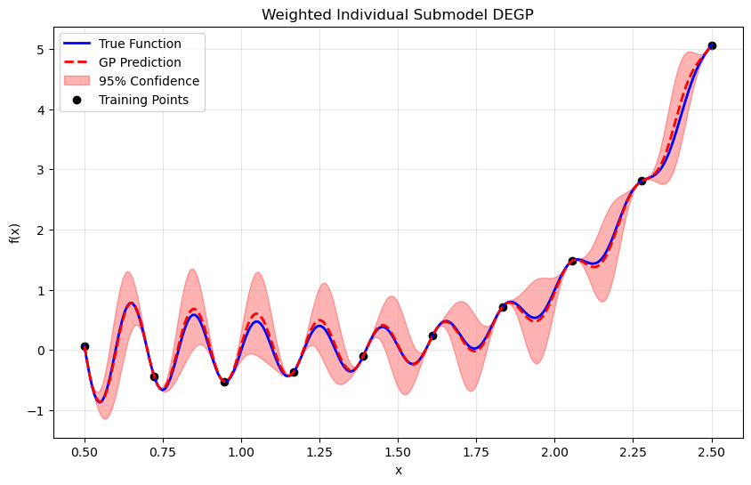
Explanation: The red dashed curve represents the WDEGP prediction with 95% confidence intervals, while the blue solid line shows the true function. The model closely tracks both oscillatory and smooth components, indicating strong performance.
—
Step 12: Analyze individual submodel contributions#
colors = plt.cm.tab10(np.linspace(0, 1, len(submodel_vals)))
plt.figure(figsize=(10, 6))
for i, color in enumerate(colors):
plt.plot(X_test.flatten(), submodel_vals[i].flatten(), color=color, alpha=0.6, label=f'Submodel {i+1}')
plt.title("Individual Submodel Predictions")
plt.xlabel("x")
plt.ylabel("f(x)")
plt.legend()
plt.grid(alpha=0.3)
plt.show()
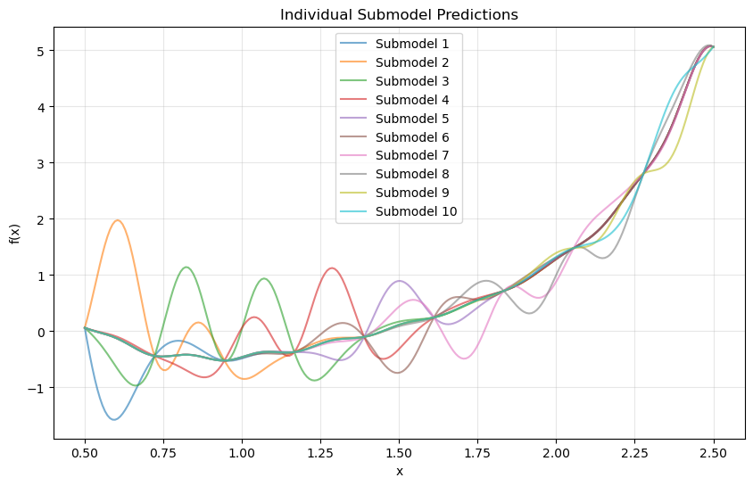
Explanation: Each submodel focuses on the local region surrounding its training point. The weighted combination of these submodels yields a globally smooth and accurate approximation.
—
Summary#
This tutorial demonstrates the Weighted Derivative-Enhanced Gaussian Process (WDEGP) for 1D function approximation using individual derivative-informed submodels. By leveraging higher-order derivative information and a weighted aggregation strategy, WDEGP effectively captures local detail while maintaining global smoothness, offering a scalable and interpretable extension of the standard DEGP framework.
Example 2: 1D Sparse Weighted DEGP with Selective Derivative Observations#
Overview#
This example demonstrates a sparse derivative-enhanced Gaussian Process (WDEGP) where derivatives are only included at a subset of training points. This approach is useful when derivative information is expensive to obtain or only available at select locations.
The sparse formulation constructs a single submodel that incorporates:
Function values at all training points
Derivatives at selected points only
—
Step 1: Import required packages#
import numpy as np
import sympy as sp
import matplotlib.pyplot as plt
from wdegp.wdegp import wdegp
import utils
Explanation: We import the required modules for numerical operations, symbolic differentiation, visualization, and the WDEGP framework.
—
Step 2: Set experiment parameters#
n_order = 2
n_bases = 1
lb_x = 0.5
ub_x = 2.5
num_points = 10
Explanation: Similar to Example 1, we use second-order derivatives. However, derivatives will only be included at a subset of the training points to demonstrate sparse derivative observations.
—
Step 3: Define the symbolic function#
x = sp.symbols('x')
f_sym = sp.sin(10 * sp.pi * x) / (2 * x) + (x - 1)**4
# Compute first and second derivatives symbolically
f1_sym = sp.diff(f_sym, x)
f2_sym = sp.diff(f_sym, x, 2)
# Convert to callable NumPy functions
f_fun = sp.lambdify(x, f_sym, "numpy")
f1_fun = sp.lambdify(x, f1_sym, "numpy")
f2_fun = sp.lambdify(x, f2_sym, "numpy")
Explanation: We define the same oscillatory function with trend from Example 1 using symbolic differentiation. This allows us to compute exact derivatives analytically rather than using numerical approximations.
—
Step 4: Generate training points#
X_train = np.linspace(lb_x, ub_x, num_points).reshape(-1, 1)
print("Training points:", X_train.ravel())
Training points: [0.5 0.72222222 0.94444444 1.16666667 1.38888889 1.61111111
1.83333333 2.05555556 2.27777778 2.5 ]
Explanation: Ten uniformly spaced training points are generated. Function values will be available at all points, but derivatives will only be included at a selected subset.
—
Step 5: Define sparse derivative structure#
# Sparse derivative selection: only include derivatives at these points
derivative_indices = [2, 3, 4, 5]
# Single submodel covering all selected derivative points
submodel_indices = [derivative_indices]
# Derivative specs: full derivative set for this submodel
base_derivative_indices = utils.gen_OTI_indices(n_bases, n_order)
derivative_specs = [base_derivative_indices]
print(f"Number of submodels: {len(submodel_indices)}")
print(f"Derivative observation points: {derivative_indices}")
print(f"Derivative types per submodel: {len(base_derivative_indices)}")
Number of submodels: 1
Derivative observation points: [2, 3, 4, 5]
Derivative types per submodel: 2
Explanation: Unlike Example 1 where each training point had its own submodel, here we create a single submodel that includes:
Function values at all 10 training points
First and second-order derivatives only at points 2, 3, 4, and 5
This sparse approach reduces computational cost while still leveraging derivative information where it’s most valuable.
—
Step 6: Compute function values and sparse analytic derivatives#
# Compute function values at all training points
y_function_values = f_fun(X_train.flatten()).reshape(-1, 1)
# First and second derivatives at selected derivative points only
d1_all = np.array([[f1_fun(X_train[idx, :])[0] for idx in derivative_indices]]).T
d2_all = np.array([[f2_fun(X_train[idx, :])[0] for idx in derivative_indices]]).T
# Submodel data: [[function values], [first-order derivatives], [second-order derivatives]]
submodel_data = [[y_function_values, d1_all, d2_all]]
# Display for verification
print("\nFunction values (y_function_values):")
print(y_function_values.flatten())
print("\nFirst-order derivatives at selected points:")
print(d1_all.flatten())
print("\nSecond-order derivatives at selected points:")
print(d2_all.flatten())
Function values (y_function_values):
[ 0.0625 -0.43905306 -0.52135928 -0.37038214 -0.10025536 0.24561416
0.71844183 1.48098397 2.80686142 5.0625 ]
First-order derivatives at selected points:
[-2.33675804 7.06863456 10.95157856 10.00879899]
Second-order derivatives at selected points:
[ 519.55440399 354.56148312 107.90503355 -111.5700953 ]
Explanation: Function values are computed at all training points, while derivatives are only computed at the four selected indices. This demonstrates how WDEGP can handle sparse derivative observations, making it practical for scenarios where derivatives are expensive or unavailable at all locations.
—
Step 7: Build weighted derivative-enhanced GP#
kernel = "SE"
kernel_type = "anisotropic"
normalize = True
gp_model = wdegp(
X_train,
submodel_data,
n_order,
n_bases,
submodel_indices,
derivative_specs,
normalize=normalize,
kernel=kernel,
kernel_type=kernel_type
)
Explanation: The WDEGP model is constructed with a single submodel that incorporates sparse derivative information. The model will still provide predictions across the entire domain by leveraging the available function and derivative observations.
—
Step 8: Optimize hyperparameters#
params = gp_model.optimize_hyperparameters(
optimizer='pso',
pop_size = 100,
n_generations = 15,
local_opt_every = 15,
debug = False
)
print("\nOptimized hyperparameters:", params)
Stopping: maximum iterations reached --> 15
Optimized hyperparameters: [ 0.86638921 -0.05256754 -14.65779265]
Explanation: Hyperparameters are optimized using Particle Swarm Optimization.
—
Step 9: Evaluate model performance#
X_test = np.linspace(lb_x, ub_x, 250).reshape(-1, 1)
y_pred, y_cov, submodel_vals, submodel_cov = gp_model.predict(
X_test, params, calc_cov=True, return_submodels=True
)
y_true = f_fun(X_test.flatten())
nrmse = np.sqrt(np.mean((y_true - y_pred.flatten())**2)) / (y_true.max() - y_true.min())
print(f"\nNRMSE: {nrmse:.6f}")
NRMSE: 0.055107
Explanation: The model is evaluated on a dense test grid to assess prediction accuracy. Despite using derivatives at only 40% of the training points, the model can still capture the function’s behavior effectively.
Step 10: Verify interpolation of training data#
# ------------------------------------------------------------
# Verify function value interpolation at all training points
# ------------------------------------------------------------
y_pred_train = gp_model.predict(X_train, params, calc_cov=False)
print("Function value interpolation errors:")
print("=" * 80)
for i in range(num_points):
error_abs = abs(y_pred_train[0, i] - y_function_values[i, 0])
error_rel = error_abs / abs(y_function_values[i, 0]) if y_function_values[i, 0] != 0 else error_abs
print(f"Point {i} (x={X_train[i, 0]:.3f}): Abs Error = {error_abs:.2e}, Rel Error = {error_rel:.2e}")
max_func_error = np.max(np.abs(y_pred_train.flatten() - y_function_values.flatten()))
print(f"\nMaximum absolute function value error: {max_func_error:.2e}")
# ------------------------------------------------------------
# Verify derivative interpolation at sparse derivative points only
# ------------------------------------------------------------
print("\n" + "=" * 80)
print("Derivative interpolation verification:")
print("=" * 80)
print(f"Checking derivatives only at sparse points: {derivative_indices}")
print("Note: Sparse formulation uses one global model with all training points")
print(" and derivatives enforced only at the sparse subset")
print("=" * 80)
# Use small perturbation for finite differences
h = 1e-6
for idx, train_idx in enumerate(derivative_indices):
x_point = X_train[train_idx, 0]
# Get predictions at perturbed points
X_plus = np.array([[x_point + h]])
X_minus = np.array([[x_point - h]])
X_center = X_train[train_idx].reshape(1, -1)
# Get predictions from the global model
y_plus = gp_model.predict(X_plus, params, calc_cov=False)
y_minus = gp_model.predict(X_minus, params, calc_cov=False)
y_center = gp_model.predict(X_center, params, calc_cov=False)
# First derivative via central difference
fd_first_deriv = (y_plus[0, 0] - y_minus[0, 0]) / (2 * h)
analytic_first_deriv = d1_all[idx, 0]
error_first_abs = abs(fd_first_deriv - analytic_first_deriv)
error_first_rel = error_first_abs / abs(analytic_first_deriv) if analytic_first_deriv != 0 else error_first_abs
# Second derivative via central difference
fd_second_deriv = (y_plus[0, 0] - 2 * y_center[0, 0] + y_minus[0, 0]) / (h ** 2)
analytic_second_deriv = d2_all[idx, 0]
error_second_abs = abs(fd_second_deriv - analytic_second_deriv)
error_second_rel = error_second_abs / abs(analytic_second_deriv) if analytic_second_deriv != 0 else error_second_abs
print(f"\nTraining Point {train_idx} (x = {x_point:.3f}):")
print(f" 1st derivative - Analytic: {analytic_first_deriv:+.6f}, FD: {fd_first_deriv:+.6f}")
print(f" Abs Error: {error_first_abs:.2e}, Rel Error: {error_first_rel:.2e}")
print(f" 2nd derivative - Analytic: {analytic_second_deriv:+.6f}, FD: {fd_second_deriv:+.6f}")
print(f" Abs Error: {error_second_abs:.2e}, Rel Error: {error_second_rel:.2e}")
print("\n" + "=" * 80)
print("Interpolation verification complete!")
print("Relative errors should be close to machine precision (< 1e-6)")
print("\n" + "=" * 80)
print("SUMMARY:")
print(f" - Function values: enforced at all {num_points} training points")
print(f" - First derivatives: verified at {len(derivative_indices)} sparse points {derivative_indices}")
print(f" - Second derivatives: verified at {len(derivative_indices)} sparse points {derivative_indices}")
print(f" - Sparse formulation: ONE global model with derivatives only at selected subset")
print(f" - Verification method: Finite differences on the global model")
print("=" * 80)
Function value interpolation errors:
================================================================================
Point 0 (x=0.500): Abs Error = 3.89e-16, Rel Error = 6.22e-15
Point 1 (x=0.722): Abs Error = 3.89e-16, Rel Error = 8.85e-16
Point 2 (x=0.944): Abs Error = 1.11e-16, Rel Error = 2.13e-16
Point 3 (x=1.167): Abs Error = 2.22e-16, Rel Error = 6.00e-16
Point 4 (x=1.389): Abs Error = 2.50e-16, Rel Error = 2.49e-15
Point 5 (x=1.611): Abs Error = 1.67e-16, Rel Error = 6.78e-16
Point 6 (x=1.833): Abs Error = 0.00e+00, Rel Error = 0.00e+00
Point 7 (x=2.056): Abs Error = 0.00e+00, Rel Error = 0.00e+00
Point 8 (x=2.278): Abs Error = 4.44e-16, Rel Error = 1.58e-16
Point 9 (x=2.500): Abs Error = 8.88e-16, Rel Error = 1.75e-16
Maximum absolute function value error: 8.88e-16
================================================================================
Derivative interpolation verification:
================================================================================
Checking derivatives only at sparse points: [2, 3, 4, 5]
Note: Sparse formulation uses one global model with all training points
and derivatives enforced only at the sparse subset
================================================================================
Training Point 2 (x = 0.944):
1st derivative - Analytic: -2.336758, FD: -2.336758
Abs Error: 1.24e-10, Rel Error: 5.31e-11
2nd derivative - Analytic: +519.554404, FD: +519.553955
Abs Error: 4.49e-04, Rel Error: 8.63e-07
Training Point 3 (x = 1.167):
1st derivative - Analytic: +7.068635, FD: +7.068635
Abs Error: 1.84e-09, Rel Error: 2.60e-10
2nd derivative - Analytic: +354.561483, FD: +354.561935
Abs Error: 4.52e-04, Rel Error: 1.28e-06
Training Point 4 (x = 1.389):
1st derivative - Analytic: +10.951579, FD: +10.951579
Abs Error: 2.55e-09, Rel Error: 2.33e-10
2nd derivative - Analytic: +107.905034, FD: +107.904907
Abs Error: 1.26e-04, Rel Error: 1.17e-06
Training Point 5 (x = 1.611):
1st derivative - Analytic: +10.008799, FD: +10.008799
Abs Error: 1.75e-09, Rel Error: 1.75e-10
2nd derivative - Analytic: -111.570095, FD: -111.569864
Abs Error: 2.31e-04, Rel Error: 2.07e-06
================================================================================
Interpolation verification complete!
Relative errors should be close to machine precision (< 1e-6)
================================================================================
SUMMARY:
- Function values: enforced at all 10 training points
- First derivatives: verified at 4 sparse points [2, 3, 4, 5]
- Second derivatives: verified at 4 sparse points [2, 3, 4, 5]
- Sparse formulation: ONE global model with derivatives only at selected subset
- Verification method: Finite differences on the global model
================================================================================
Explanation: This verification step ensures that the sparse WDEGP model correctly interpolates the function values at all training points and first and second derivatives only at the selected sparse subset (points 2, 3, 4, and 5 in this example).
Important Note on Sparse Formulation:
Unlike Example 1 where each training point has its own individual submodel with weighted combination, the sparse formulation uses a single global model that incorporates:
All training points for function value observations
Only a sparse subset of training points for derivative observations
This is a fundamentally different architecture:
Example 1: Multiple submodels (one per training point), weighted combination
Example 2 (Sparse): Single global model, derivatives at strategic locations only
Key differences from Example 1:
Function values are checked at all 10 training points
Derivatives (both first and second order) are only verified at the 4 sparse points where they were provided (indices 2-5)
Single global model uses all training points but enforces derivatives only at the sparse subset
No weighting scheme needed since there’s only one model
Direct verification on the global model without submodel decomposition
The verification uses finite difference approximations:
First derivative: Central difference \(f'(x) \approx \frac{f(x+h) - f(x-h)}{2h}\)
Second derivative: Central difference \(f''(x) \approx \frac{f(x+h) - 2f(x) + f(x-h)}{h^2}\)
where \(h = 10^{-6}\) is a small perturbation. The errors between the finite difference estimates and the analytic derivatives used during training should be near machine precision (typically < \(10^{-6}\)), confirming that the GP correctly enforces its derivative constraints at the sparse locations.
The key feature of this sparse formulation is that derivative information is concentrated at a few strategic locations rather than being required at all training points. This can be particularly efficient when:
Derivative evaluations are expensive
Only certain regions require high accuracy
Adaptive sampling strategies identify critical locations
Computational budget is limited
—
Step 11: Visualize combined prediction#
plt.figure(figsize=(10, 6))
plt.plot(X_test, y_true, 'b-', label='True Function', linewidth=2)
plt.plot(X_test.flatten(), y_pred.flatten(), 'r--', label='GP Prediction', linewidth=2)
plt.fill_between(X_test.ravel(),
(y_pred.flatten() - 2*np.sqrt(y_cov)).ravel(),
(y_pred.flatten() + 2*np.sqrt(y_cov)).ravel(),
color='red', alpha=0.3, label='95% Confidence')
plt.scatter(X_train, y_function_values, color='black', label='Training Points')
plt.scatter(X_train[derivative_indices], y_function_values[derivative_indices],
color='orange', s=100, marker='s', label='Derivative Points', zorder=5)
plt.title("Sparse Analytic Weighted DEGP")
plt.xlabel("x")
plt.ylabel("f(x)")
plt.legend()
plt.grid(alpha=0.3)
plt.show()
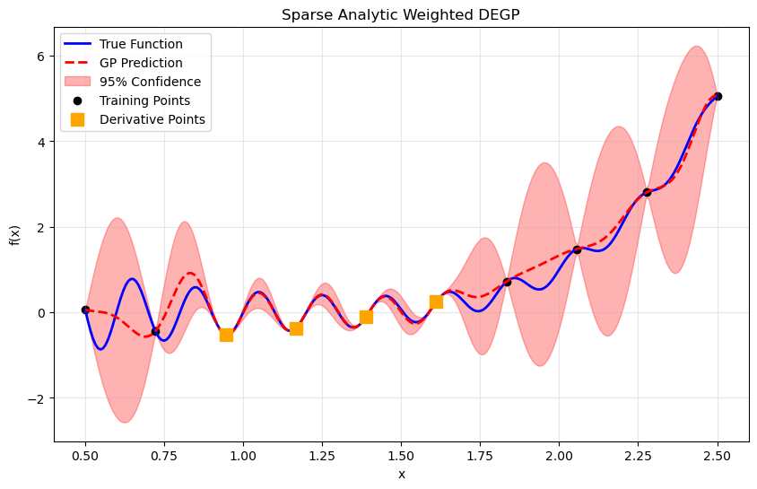
Explanation: The visualization shows the WDEGP prediction with 95% confidence intervals. Orange squares highlight the training points where derivative information was included. The model effectively interpolates the function despite the sparse derivative observations.
—
Step 12: Analyze submodel contributions#
colors = plt.cm.tab10(np.linspace(0, 1, len(submodel_vals)))
plt.figure(figsize=(10, 6))
for i, color in enumerate(colors):
plt.plot(X_test.flatten(), submodel_vals[i].flatten(), color=color,
alpha=0.6, label=f'Submodel {i+1}')
plt.title("Submodel Predictions")
plt.xlabel("x")
plt.ylabel("f(x)")
plt.legend()
plt.grid(alpha=0.3)
plt.show()
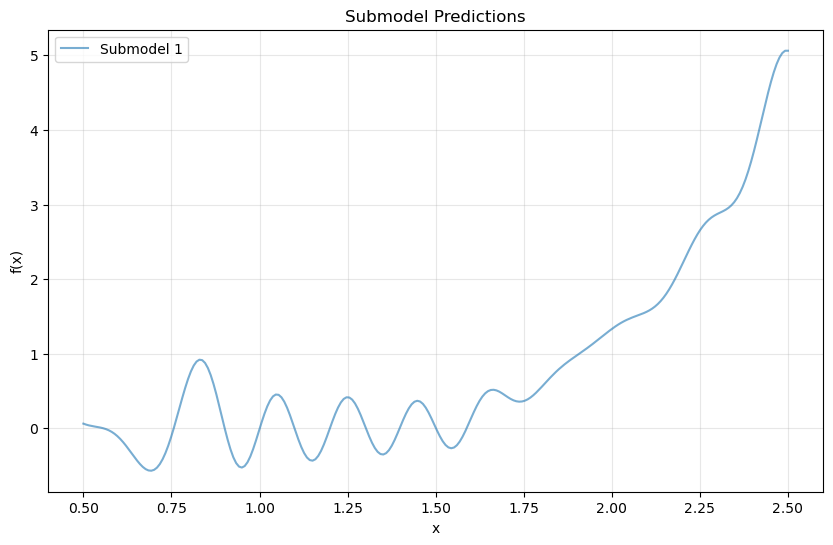
Explanation: Since this example uses a single submodel, only one curve is displayed. This submodel leverages all available function values and the sparse derivative observations to produce the global prediction.
—
Summary#
This tutorial demonstrates sparse derivative observations in the WDEGP framework. By including derivatives at only a subset of training points (40% in this example), we can:
Reduce computational cost when derivatives are expensive to obtain
Maintain good predictive accuracy through strategic derivative placement
Handle practical scenarios where derivative information is partially available
The sparse formulation provides flexibility in balancing accuracy and computational efficiency, making WDEGP applicable to a wider range of real-world problems.
Example 3: 1D Weighted DEGP with Selective Training Points and Index Reordering#
Overview#
This example demonstrates a critical indexing requirement in WDEGP: when selecting a subset of training points for derivative observations in a submodel, the indices must always be contiguous (sequential), regardless of which original training points you select.
For example, if you want to use derivatives at original training points [0, 2, 4, 6, 8] in a single submodel:
INCORRECT:
submodel_indices = [[0, 2, 4, 6, 8]](non-contiguous, has gaps)CORRECT: Reorder ALL training data so selected points come first, then use
submodel_indices = [[0, 1, 2, 3, 4]]
The indices must be contiguous sequences like [0,1,2,3,4], [2,3,4,5], or [5,6,7,8,9], but cannot have gaps.
Key insight: You always pass ALL training points to WDEGP, but reorder them so that:
Points where you want derivatives come with contiguous indices
Function values are provided at ALL points
Derivatives are only provided at the selected subset
This requirement means you must:
Select which original training points should have derivatives
Reorder ALL training data so selected points have contiguous indices
Create a submodel referencing them with sequential indices
Provide function values at all points, derivatives only at selected points
This tutorial demonstrates proper data reordering when constructing a single submodel with selective derivative observations.
—
Step 1: Import required packages#
import numpy as np
import sympy as sp
import matplotlib.pyplot as plt
from wdegp.wdegp import wdegp
import utils
Explanation: We import the required modules for numerical operations, symbolic differentiation, visualization, and the WDEGP framework.
—
Step 2: Set experiment parameters#
n_order = 2
n_bases = 1
lb_x = 0.5
ub_x = 2.5
num_points = 10
test_points = 250
kernel = "SE"
kernel_type = "anisotropic"
normalize = True
n_restart_optimizer = 15
swarm_size = 50
random_seed = 42
np.random.seed(random_seed)
Explanation: We use the same configuration as previous examples: second-order derivatives with a Squared Exponential kernel.
—
Step 3: Define the symbolic function#
x = sp.symbols('x')
f_sym = sp.sin(10 * sp.pi * x) / (2 * x) + (x - 1)**4
# Compute first and second derivatives symbolically
f1_sym = sp.diff(f_sym, x)
f2_sym = sp.diff(f_sym, x, 2)
# Convert to callable NumPy functions
f_fun = sp.lambdify(x, f_sym, "numpy")
f1_fun = sp.lambdify(x, f1_sym, "numpy")
f2_fun = sp.lambdify(x, f2_sym, "numpy")
Explanation: The same oscillatory benchmark function is used for consistency across examples. Symbolic differentiation provides exact derivative values.
—
Step 4: Generate full set of training points#
# Generate all potential training points
X_all = np.linspace(lb_x, ub_x, num_points).reshape(-1, 1)
print("All available training points:")
for i, x in enumerate(X_all.ravel()):
print(f" Index {i}: x = {x:.4f}")
All available training points:
Index 0: x = 0.5000
Index 1: x = 0.7222
Index 2: x = 0.9444
Index 3: x = 1.1667
Index 4: x = 1.3889
Index 5: x = 1.6111
Index 6: x = 1.8333
Index 7: x = 2.0556
Index 8: x = 2.2778
Index 9: x = 2.5000
Explanation: We start with a complete set of uniformly spaced training points. We will use ALL of these points in the model, but only include derivatives at a selected subset.
—
Step 5: Select subset of training points for derivatives#
# Select non-contiguous training points for derivative observations
original_indices = [0, 2, 4, 6, 8]
print(f"\nOriginal training point indices where we want derivatives: {original_indices}")
print("\nSelected training points for derivatives:")
for i, orig_idx in enumerate(original_indices):
print(f" Original index {orig_idx}: x = {X_all[orig_idx, 0]:.4f}")
Original training point indices where we want derivatives: [0, 2, 4, 6, 8]
Selected training points for derivatives:
Original index 0: x = 0.5000
Original index 2: x = 0.9444
Original index 4: x = 1.3889
Original index 6: x = 1.8333
Original index 8: x = 2.2778
Explanation: We select every other training point from the original set for derivative observations. These are the points where we want to include first and second-order derivative information in our submodel. However, we cannot directly use indices [0, 2, 4, 6, 8] because they are non-contiguous.
—
Step 6: Reorder ALL training data with sequential indices#
# Reorder X_all so that selected points come first with sequential indices
# This allows us to use submodel_indices = [[0, 1, 2, 3, 4]]
# Create reordered array: selected points first, then unused points
X_train = np.vstack([X_all[original_indices],
X_all[[i for i in range(len(X_all)) if i not in original_indices]]])
print("\nReordered training array (X_train):")
print(" SELECTED points (with derivatives, indices 0-4):")
for i in range(len(original_indices)):
orig_idx = original_indices[i]
print(f" X_train[{i}] = {X_train[i, 0]:.4f} (was X_all[{orig_idx}])")
print(" UNUSED points (function values only, indices 5-9):")
unused_original_indices = [i for i in range(len(X_all)) if i not in original_indices]
for i in range(len(original_indices), len(X_train)):
orig_idx = unused_original_indices[i - len(original_indices)]
print(f" X_train[{i}] = {X_train[i, 0]:.4f} (was X_all[{orig_idx}])")
print(f"\n*** CRITICAL: X_train has ALL {len(X_train)} points, reordered so selected points have indices 0-4 ***")
Reordered training array (X_train):
SELECTED points (with derivatives, indices 0-4):
X_train[0] = 0.5000 (was X_all[0])
X_train[1] = 0.9444 (was X_all[2])
X_train[2] = 1.3889 (was X_all[4])
X_train[3] = 1.8333 (was X_all[6])
X_train[4] = 2.2778 (was X_all[8])
UNUSED points (function values only, indices 5-9):
X_train[5] = 0.7222 (was X_all[1])
X_train[6] = 1.1667 (was X_all[3])
X_train[7] = 1.6111 (was X_all[5])
X_train[8] = 2.0556 (was X_all[7])
X_train[9] = 2.5000 (was X_all[9])
*** CRITICAL: X_train has ALL 10 points, reordered so selected points have indices 0-4 ***
Explanation: CRITICAL STEP: We reorder ALL training data so that:
Points where we want derivatives (original indices [0, 2, 4, 6, 8]) are placed at positions 0-4 in
X_trainPoints without derivatives (original indices [1, 3, 5, 7, 9]) are placed at positions 5-9 in
X_train
This reordering is mandatory because:
Submodel indices must be contiguous sequences (e.g., [0,1,2,3,4] or [2,3,4,5,6])
The framework expects
submodel_indicesto reference positions inX_trainAny gaps in indexing will cause errors or incorrect behavior
Important: We pass ALL 10 training points to the model, not just the 5 selected ones. The reordering simply ensures that the points where we want derivatives have contiguous indices.
—
Step 7: Define submodel structure with sequential indices#
# CORRECT: Use sequential indices for the reordered training data
# Even though we selected original points [0,2,4,6,8], we now use [0,1,2,3,4]
# Create ONE submodel that uses derivatives at the first 5 points
submodel_indices = [[0, 1, 2, 3, 4]] # Single submodel with derivatives at indices 0-4
# Derivative specs: full derivative set for this submodel
base_derivative_indices = utils.gen_OTI_indices(n_bases, n_order)
derivative_specs = [base_derivative_indices] # One spec for one submodel
print(f"Number of submodels: {len(submodel_indices)}")
print(f"Submodel indices (sequential): {submodel_indices}")
print(f"Derivative types per submodel: {len(base_derivative_indices)}")
print("\n*** These indices reference positions in X_train (0-4 are selected points) ***")
Number of submodels: 1
Submodel indices (sequential): [[0, 1, 2, 3, 4]]
Derivative types per submodel: 2
*** These indices reference positions in X_train (0-4 are selected points) ***
Explanation:
After reordering, we create a single submodel using sequential indices [0, 1, 2, 3, 4] to reference the first five positions in the reordered X_train array. These positions correspond to the original training points where we want derivatives.
Common mistake to avoid:
# WRONG - This will cause errors due to non-contiguous indices!
submodel_indices = [[0, 2, 4, 6, 8]] # Don't use indices with gaps
—
Step 8: Compute function values and derivatives on reordered data#
# Compute function values at ALL reordered training points
y_function_values = f_fun(X_train.flatten()).reshape(-1, 1)
print("Function values at ALL reordered training points (X_train):")
for i, (x, y) in enumerate(zip(X_train.ravel(), y_function_values.ravel())):
status = "SELECTED (with derivatives)" if i < len(original_indices) else "unused (function only)"
print(f" X_train[{i}] = {x:.4f}: f(x) = {y:.4f} ({status})")
# Prepare submodel data with derivatives at the selected points only
# For this single submodel, we need derivatives at the first 5 points (indices 0-4)
derivative_indices = [0, 1, 2, 3, 4] # First 5 indices in X_train
# Compute derivatives at selected points
d1_all = np.array([[f1_fun(X_train[idx, 0])] for idx in derivative_indices])
d2_all = np.array([[f2_fun(X_train[idx, 0])] for idx in derivative_indices])
print("\nFirst derivatives at SELECTED points (indices 0-4 in X_train):")
for i, d1_val in enumerate(d1_all):
print(f" d1(X_train[{i}]) = {d1_val[0]:.4f}")
print("\nSecond derivatives at SELECTED points (indices 0-4 in X_train):")
for i, d2_val in enumerate(d2_all):
print(f" d2(X_train[{i}]) = {d2_val[0]:.4f}")
# Single submodel data: [function values at ALL points, derivatives at selected points]
# y_function_values contains ALL function values from X_train (10 points, reordered)
# d1_all and d2_all contain derivatives only at first 5 points (indices 0-4)
submodel_data = [[y_function_values, d1_all, d2_all]]
print("\nCRITICAL: Submodel data structure")
print(f" {len(submodel_data)} submodel (single submodel)")
print(f" This submodel has {len(submodel_data[0])} elements:")
print(f" - Element 0: Function values at ALL {len(y_function_values)} points in X_train")
print(f" - Element 1: First derivatives at {len(d1_all)} points (indices 0-4)")
print(f" - Element 2: Second derivatives at {len(d2_all)} points (indices 0-4)")
Function values at ALL reordered training points (X_train):
X_train[0] = 0.5000: f(x) = 0.0625 (SELECTED (with derivatives))
X_train[1] = 0.9444: f(x) = -0.5214 (SELECTED (with derivatives))
X_train[2] = 1.3889: f(x) = -0.1003 (SELECTED (with derivatives))
X_train[3] = 1.8333: f(x) = 0.7184 (SELECTED (with derivatives))
X_train[4] = 2.2778: f(x) = 2.8069 (SELECTED (with derivatives))
X_train[5] = 0.7222: f(x) = -0.4391 (unused (function only))
X_train[6] = 1.1667: f(x) = -0.3704 (unused (function only))
X_train[7] = 1.6111: f(x) = 0.2456 (unused (function only))
X_train[8] = 2.0556: f(x) = 1.4810 (unused (function only))
X_train[9] = 2.5000: f(x) = 5.0625 (unused (function only))
First derivatives at SELECTED points (indices 0-4 in X_train):
d1(X_train[0]) = -31.9159
d1(X_train[1]) = -2.3368
d1(X_train[2]) = 10.9516
d1(X_train[3]) = 6.4700
d1(X_train[4]) = 3.0003
Second derivatives at SELECTED points (indices 0-4 in X_train):
d2(X_train[0]) = 128.6637
d2(X_train[1]) = 519.5544
d2(X_train[2]) = 107.9050
d2(X_train[3]) = -229.3085
d2(X_train[4]) = -114.9743
CRITICAL: Submodel data structure
1 submodel (single submodel)
This submodel has 3 elements:
- Element 0: Function values at ALL 10 points in X_train
- Element 1: First derivatives at 5 points (indices 0-4)
- Element 2: Second derivatives at 5 points (indices 0-4)
Explanation: CRITICAL DISTINCTION:
y_function_valuescontains function values at ALL 10 training points in the reorderedX_traind1_allandd2_allcontain derivatives only at the first 5 points (indices 0-4) inX_train
This structure allows the WDEGP model to:
Use function values at all available training locations for better interpolation
Include derivative information only where it’s available or needed
Leverage the full information content without requiring derivatives everywhere
The reordering ensures that submodel_indices = [[0, 1, 2, 3, 4]] correctly identifies which points have derivative information.
—
Step 9: Build weighted derivative-enhanced GP#
gp_model = wdegp(
X_train,
submodel_data,
n_order,
n_bases,
submodel_indices,
derivative_specs,
normalize=normalize,
kernel=kernel,
kernel_type=kernel_type
)
Explanation: The WDEGP model is constructed using:
X_train: ALL 10 training points (reordered)submodel_data: Function values at all 10 points, derivatives at first 5submodel_indices: Sequential indices [0, 1, 2, 3, 4] referencing the reordered positions
The model has no knowledge of the original ordering—it only sees properly formatted input with contiguous indices.
—
Step 10: Optimize hyperparameters#
params = gp_model.optimize_hyperparameters(
optimizer='jade',
pop_size = 100,
n_generations = 15,
local_opt_every = None,
debug = False
)
print("Optimized hyperparameters:", params)
Optimized hyperparameters: [ 0.83683935 -0.05986268 -11.05288966]
Explanation: Hyperparameter optimization proceeds normally. The model learns optimal parameters based on all training data with selective derivative information.
—
Step 11: Evaluate model performance#
X_test = np.linspace(lb_x, ub_x, test_points).reshape(-1, 1)
y_pred, y_cov, submodel_vals, submodel_cov = gp_model.predict(
X_test, params, calc_cov=True, return_submodels=True
)
y_true = f_fun(X_test.flatten())
nrmse = np.sqrt(np.mean((y_true - y_pred.flatten())**2)) / (y_true.max() - y_true.min())
print(f"NRMSE: {nrmse:.6f}")
NRMSE: 0.103310
Explanation: Model performance is evaluated over a dense test grid. The model leverages both function values at all 10 points and derivatives at 5 selected points.
—
Step 12: Verify interpolation of reordered training data#
# ------------------------------------------------------------
# Verify function value interpolation at all reordered training points
# ------------------------------------------------------------
y_pred_train = gp_model.predict(X_train, params, calc_cov=False)
print("Function value interpolation errors (reordered X_train):")
print("=" * 80)
for i in range(num_points):
error_abs = abs(y_pred_train[0, i] - y_function_values[i, 0])
error_rel = error_abs / abs(y_function_values[i, 0]) if y_function_values[i, 0] != 0 else error_abs
print(f"X_train[{i}] (x={X_train[i, 0]:.4f}): Abs Error = {error_abs:.2e}, Rel Error = {error_rel:.2e}")
max_func_error = np.max(np.abs(y_pred_train.flatten() - y_function_values.flatten()))
print(f"\nMaximum absolute function value error: {max_func_error:.2e}")
# ------------------------------------------------------------
# Verify derivative interpolation at reordered derivative points (indices 0-4)
# ------------------------------------------------------------
print("\n" + "=" * 80)
print("Derivative interpolation verification:")
print("=" * 80)
print(f"Checking derivatives at reordered indices 0-4 (contiguous derivative points)")
print(f"These correspond to original indices: {original_indices}")
print("Note: Sparse formulation uses one global model with all training points")
print(" and derivatives enforced only at indices 0-4")
print("=" * 80)
# Use small perturbation for finite differences
h = 1e-6
for i in range(len(original_indices)):
x_point = X_train[i, 0]
# Get predictions at perturbed points
X_plus = np.array([[x_point + h]])
X_minus = np.array([[x_point - h]])
X_center = X_train[i].reshape(1, -1)
# Get predictions from the global model
y_plus = gp_model.predict(X_plus, params, calc_cov=False)
y_minus = gp_model.predict(X_minus, params, calc_cov=False)
y_center = gp_model.predict(X_center, params, calc_cov=False)
# First derivative via central difference
fd_first_deriv = (y_plus[0, 0] - y_minus[0, 0]) / (2 * h)
analytic_first_deriv = d1_all[i, 0]
error_first_abs = abs(fd_first_deriv - analytic_first_deriv)
error_first_rel = error_first_abs / abs(analytic_first_deriv) if analytic_first_deriv != 0 else error_first_abs
# Second derivative via central difference
fd_second_deriv = (y_plus[0, 0] - 2 * y_center[0, 0] + y_minus[0, 0]) / (h ** 2)
analytic_second_deriv = d2_all[i, 0]
error_second_abs = abs(fd_second_deriv - analytic_second_deriv)
error_second_rel = error_second_abs / abs(analytic_second_deriv) if analytic_second_deriv != 0 else error_second_abs
orig_idx = original_indices[i]
print(f"\nX_train[{i}] (was X_all[{orig_idx}], x = {x_point:.3f}):")
print(f" 1st derivative - Analytic: {analytic_first_deriv:+.6f}, FD: {fd_first_deriv:+.6f}")
print(f" Abs Error: {error_first_abs:.2e}, Rel Error: {error_first_rel:.2e}")
print(f" 2nd derivative - Analytic: {analytic_second_deriv:+.6f}, FD: {fd_second_deriv:+.6f}")
print(f" Abs Error: {error_second_abs:.2e}, Rel Error: {error_second_rel:.2e}")
# ------------------------------------------------------------
# Show that points without derivatives (indices 5-9) are NOT checked
# ------------------------------------------------------------
print("\n" + "=" * 80)
print("Points without derivative constraints (indices 5-9):")
print("=" * 80)
unused_original_indices = [i for i in range(len(X_all)) if i not in original_indices]
for j, orig_idx in enumerate(unused_original_indices):
new_idx = len(original_indices) + j
x_point = X_train[new_idx, 0]
print(f"X_train[{new_idx}] (was X_all[{orig_idx}], x = {x_point:.3f}): "
f"Only function value enforced, no derivative constraints")
print("\n" + "=" * 80)
print("Interpolation verification complete!")
print("Relative errors should be close to machine precision (< 1e-6)")
print("\n" + "=" * 80)
print("SUMMARY:")
print(f" - Function values: enforced at all {num_points} training points")
print(f" - First derivatives: verified at reordered indices 0-4")
print(f" - Second derivatives: verified at reordered indices 0-4")
print(f" - Reordered indices 0-4 correspond to original indices: {original_indices}")
print(f" - Sparse formulation: ONE global model with derivatives at contiguous indices")
print(f" - Verification method: Finite differences on the global model")
print("=" * 80)
Function value interpolation errors (reordered X_train):
================================================================================
X_train[0] (x=0.5000): Abs Error = 5.55e-17, Rel Error = 8.88e-16
X_train[1] (x=0.9444): Abs Error = 1.11e-16, Rel Error = 2.13e-16
X_train[2] (x=1.3889): Abs Error = 8.33e-17, Rel Error = 8.31e-16
X_train[3] (x=1.8333): Abs Error = 3.33e-16, Rel Error = 4.64e-16
X_train[4] (x=2.2778): Abs Error = 8.88e-16, Rel Error = 3.16e-16
X_train[5] (x=0.7222): Abs Error = 1.67e-16, Rel Error = 3.79e-16
X_train[6] (x=1.1667): Abs Error = 4.44e-16, Rel Error = 1.20e-15
X_train[7] (x=1.6111): Abs Error = 1.67e-16, Rel Error = 6.78e-16
X_train[8] (x=2.0556): Abs Error = 4.44e-16, Rel Error = 3.00e-16
X_train[9] (x=2.5000): Abs Error = 0.00e+00, Rel Error = 0.00e+00
Maximum absolute function value error: 8.88e-16
================================================================================
Derivative interpolation verification:
================================================================================
Checking derivatives at reordered indices 0-4 (contiguous derivative points)
These correspond to original indices: [0, 2, 4, 6, 8]
Note: Sparse formulation uses one global model with all training points
and derivatives enforced only at indices 0-4
================================================================================
X_train[0] (was X_all[0], x = 0.500):
1st derivative - Analytic: -31.915927, FD: -31.915927
Abs Error: 1.39e-09, Rel Error: 4.35e-11
2nd derivative - Analytic: +128.663706, FD: +128.658861
Abs Error: 4.84e-03, Rel Error: 3.77e-05
X_train[1] (was X_all[2], x = 0.944):
1st derivative - Analytic: -2.336758, FD: -2.336758
Abs Error: 2.09e-10, Rel Error: 8.94e-11
2nd derivative - Analytic: +519.554404, FD: +519.554177
Abs Error: 2.27e-04, Rel Error: 4.36e-07
X_train[2] (was X_all[4], x = 1.389):
1st derivative - Analytic: +10.951579, FD: +10.951579
Abs Error: 1.27e-09, Rel Error: 1.16e-10
2nd derivative - Analytic: +107.905034, FD: +107.905018
Abs Error: 1.53e-05, Rel Error: 1.42e-07
X_train[3] (was X_all[6], x = 1.833):
1st derivative - Analytic: +6.469975, FD: +6.469975
Abs Error: 5.82e-10, Rel Error: 9.00e-11
2nd derivative - Analytic: -229.308517, FD: -229.308461
Abs Error: 5.63e-05, Rel Error: 2.45e-07
X_train[4] (was X_all[8], x = 2.278):
1st derivative - Analytic: +3.000267, FD: +3.000267
Abs Error: 9.86e-10, Rel Error: 3.29e-10
2nd derivative - Analytic: -114.974318, FD: -114.974696
Abs Error: 3.78e-04, Rel Error: 3.29e-06
================================================================================
Points without derivative constraints (indices 5-9):
================================================================================
X_train[5] (was X_all[1], x = 0.722): Only function value enforced, no derivative constraints
X_train[6] (was X_all[3], x = 1.167): Only function value enforced, no derivative constraints
X_train[7] (was X_all[5], x = 1.611): Only function value enforced, no derivative constraints
X_train[8] (was X_all[7], x = 2.056): Only function value enforced, no derivative constraints
X_train[9] (was X_all[9], x = 2.500): Only function value enforced, no derivative constraints
================================================================================
Interpolation verification complete!
Relative errors should be close to machine precision (< 1e-6)
================================================================================
SUMMARY:
- Function values: enforced at all 10 training points
- First derivatives: verified at reordered indices 0-4
- Second derivatives: verified at reordered indices 0-4
- Reordered indices 0-4 correspond to original indices: [0, 2, 4, 6, 8]
- Sparse formulation: ONE global model with derivatives at contiguous indices
- Verification method: Finite differences on the global model
================================================================================
Explanation: This verification step ensures that the WDEGP model correctly interpolates the reordered training data. This is particularly important for Example 3 because:
Function values are checked at all 10 training points in their reordered positions
Derivatives are verified at reordered indices 0-4 (the first 5 contiguous points in
X_train)Index mapping is clearly shown: reordered indices 0-4 correspond to original indices [0, 2, 4, 6, 8]
Relative errors are computed to assess accuracy relative to the magnitude of each quantity
Important Note on Sparse Formulation with Reordering:
Similar to Example 2, this example uses a single global model that incorporates:
All training points for function value observations
Only a contiguous subset (indices 0-4) for derivative observations
The key innovation in Example 3 is the data reordering strategy:
Example 2 (Sparse): Derivatives at arbitrary indices [2, 3, 4, 5]
Example 3 (Reordered Sparse): Derivatives at contiguous indices [0, 1, 2, 3, 4]
This reordering provides computational and implementation benefits:
Simplified indexing (contiguous block of derivative points)
Easier data structure management
Same sparse formulation, just reorganized
Architecture comparison:
Example 1: Multiple submodels (one per training point), weighted combination
Example 2: Single global model, derivatives at sparse arbitrary indices
Example 3: Single global model, derivatives at sparse contiguous indices (reordered)
Key insights:
The model works with
X_train(reordered data), notX_all(original data)Derivative constraints are enforced at
X_train[0:5], which are strategically selected points from the original training set, now placed contiguouslyPoints at
X_train[5:10]only have function value constraints, no derivativesSingle global model uses all training points but enforces derivatives only at the contiguous subset
No weighting scheme needed since there’s only one model
The verification uses finite difference approximations:
First derivative: Central difference \(f'(x) \approx \frac{f(x+h) - f(x-h)}{2h}\)
Second derivative: Central difference \(f''(x) \approx \frac{f(x+h) - 2f(x) + f(x-h)}{h^2}\)
where \(h = 10^{-6}\) is a small perturbation. The errors between the finite difference estimates and the analytic derivatives used during training should be near machine precision (typically < \(10^{-6}\)), confirming that the GP correctly enforces its derivative constraints at the reordered contiguous locations.
Critical verification: This step confirms that the data reordering procedure does not introduce any errors and that the model correctly interprets which points have derivative information based on the contiguous indexing scheme (derivatives at indices 0-4, function values only at indices 5-9). The reordering is purely for organizational convenience and does not change the fundamental sparse formulation.
Advantages of contiguous derivative indices:
Simpler data structure:
[derivatives] + [function values only]Cleaner implementation: derivative block at the beginning
Same mathematical properties as Example 2 (sparse formulation)
Easier to extend: adding more derivative points just extends the contiguous block
—
Step 13: Visualize combined prediction#
plt.figure(figsize=(10, 6))
plt.plot(X_test, y_true, 'b-', label='True Function', linewidth=2)
plt.plot(X_test.flatten(), y_pred.flatten(), 'r--', label='GP Prediction', linewidth=2)
plt.fill_between(X_test.ravel(),
(y_pred.flatten() - 2*np.sqrt(y_cov)).ravel(),
(y_pred.flatten() + 2*np.sqrt(y_cov)).ravel(),
color='red', alpha=0.3, label='95% Confidence')
# Show selected training points (used in model with derivatives)
plt.scatter(X_train[:len(original_indices)],
f_fun(X_train[:len(original_indices), 0].flatten()).reshape(-1, 1),
color='black', s=100, label='Points with derivatives', zorder=5)
# Show unused training points (function values only, no derivatives)
plt.scatter(X_train[len(original_indices):],
f_fun(X_train[len(original_indices):, 0].flatten()).reshape(-1, 1),
color='gray', s=100, marker='x',
label='Points without derivatives', zorder=5)
plt.title("Weighted DEGP with Selective Derivative Observations")
plt.xlabel("x")
plt.ylabel("f(x)")
plt.legend()
plt.grid(alpha=0.3)
plt.show()
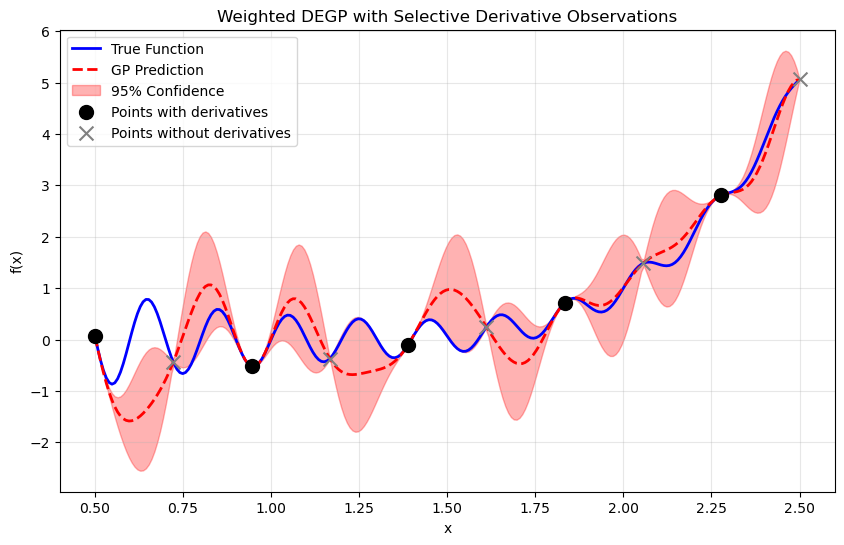
Explanation:
Black circles show the 5 training points with derivative information (originally at indices 0, 2, 4, 6, 8 in X_all, now at indices 0-4 in X_train). Gray X marks show the 5 points with only function values (originally at indices 1, 3, 5, 7, 9 in X_all, now at indices 5-9 in X_train). The model successfully interpolates using both types of information.
—
Step 14: Demonstrate the indexing mapping#
print("=" * 70)
print("INDEX MAPPING SUMMARY")
print("=" * 70)
print("\nOriginal Data (X_all) --> Reordered Data (X_train):")
print("-" * 70)
# Show mapping for selected points
print("SELECTED points (with derivatives):")
for i in range(len(original_indices)):
orig_idx = original_indices[i]
print(f" X_all[{orig_idx}] = {X_all[orig_idx,0]:.4f} --> X_train[{i}] = {X_train[i,0]:.4f}")
# Show mapping for unused points
print("\nUNUSED points (function values only):")
unused_original_indices = [i for i in range(len(X_all)) if i not in original_indices]
for j, orig_idx in enumerate(unused_original_indices):
new_idx = len(original_indices) + j
print(f" X_all[{orig_idx}] = {X_all[orig_idx,0]:.4f} --> X_train[{new_idx}] = {X_train[new_idx,0]:.4f}")
print("\nSubmodel Indices:")
print("-" * 70)
print(f" submodel_indices = {submodel_indices}")
print(f" These reference the FIRST 5 positions in reordered X_train")
print(f" Which correspond to original indices: {original_indices}")
print("=" * 70)
======================================================================
INDEX MAPPING SUMMARY
======================================================================
Original Data (X_all) --> Reordered Data (X_train):
----------------------------------------------------------------------
SELECTED points (with derivatives):
X_all[0] = 0.5000 --> X_train[0] = 0.5000
X_all[2] = 0.9444 --> X_train[1] = 0.9444
X_all[4] = 1.3889 --> X_train[2] = 1.3889
X_all[6] = 1.8333 --> X_train[3] = 1.8333
X_all[8] = 2.2778 --> X_train[4] = 2.2778
UNUSED points (function values only):
X_all[1] = 0.7222 --> X_train[5] = 0.7222
X_all[3] = 1.1667 --> X_train[6] = 1.1667
X_all[5] = 1.6111 --> X_train[7] = 1.6111
X_all[7] = 2.0556 --> X_train[8] = 2.0556
X_all[9] = 2.5000 --> X_train[9] = 2.5000
Submodel Indices:
----------------------------------------------------------------------
submodel_indices = [[0, 1, 2, 3, 4]]
These reference the FIRST 5 positions in reordered X_train
Which correspond to original indices: [0, 2, 4, 6, 8]
======================================================================
Explanation: This summary clarifies the complete mapping between original and reordered data. Understanding this mapping is essential when:
Selecting specific training points for derivative observations
Interpreting model predictions relative to original data
Debugging indexing issues in submodel construction
—
Step 15: Analyze submodel prediction#
plt.figure(figsize=(10, 6))
plt.plot(X_test, y_true, 'b-', label='True Function', linewidth=2, alpha=0.5)
plt.plot(X_test.flatten(), submodel_vals[0].flatten(), 'g-',
label='Submodel Prediction', linewidth=2, alpha=0.7)
plt.scatter(X_train[:len(original_indices)],
f_fun(X_train[:len(original_indices), 0].flatten()).reshape(-1, 1),
color='black', s=100, label='Points with derivatives', zorder=5)
plt.scatter(X_train[len(original_indices):],
f_fun(X_train[len(original_indices):, 0].flatten()).reshape(-1, 1),
color='gray', s=100, marker='x', label='Points without derivatives', zorder=5)
plt.title("Single Submodel Prediction")
plt.xlabel("x")
plt.ylabel("f(x)")
plt.legend()
plt.grid(alpha=0.3)
plt.show()
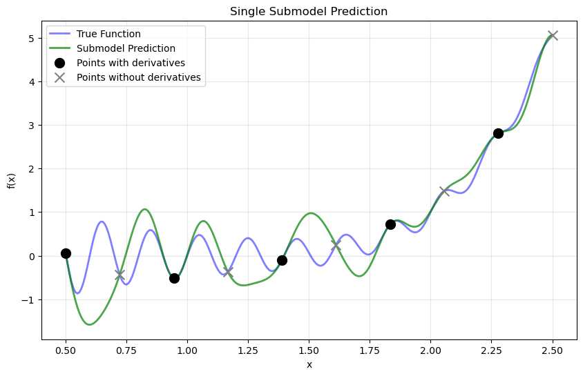
Explanation: The single submodel leverages both function values at all 10 training points and derivative information at 5 selected points to produce the global prediction. The green line shows how the submodel captures the function behavior across the entire domain using the strategically placed derivative observations.
—
Summary#
This tutorial demonstrates the critical data reordering requirement in WDEGP when working with selective derivative observations:
Key Requirements:
Pass ALL training points to the model, not just those with derivatives
Reorder training data so points with derivatives have contiguous indices
Use sequential indices in
submodel_indices(e.g., [0,1,2,3,4])Provide function values at all training points
Provide derivatives only at selected points
Step-by-Step Process:
# Step 1: Select which original points should have derivatives
original_indices = [0, 2, 4, 6, 8]
# Step 2: Reorder ALL training data (selected first, then unused)
X_train = np.vstack([X_all[original_indices],
X_all[[i for i in range(len(X_all)) if i not in original_indices]]])
# Step 3: Compute function values at ALL reordered points
y_function_values = f_fun(X_train.flatten()).reshape(-1, 1)
# Step 4: Compute derivatives only at selected points (indices 0-4)
d1_all = ... # derivatives at X_train[0:5]
d2_all = ... # derivatives at X_train[0:5]
# Step 5: Use sequential indices for the submodel
submodel_indices = [[0, 1, 2, 3, 4]] # CORRECT
# NOT: [[0, 2, 4, 6, 8]] # WRONG!
Why This Matters:
Prevents indexing errors and crashes
Allows selective use of expensive derivative information
Maintains flexibility in choosing where to observe derivatives
Ensures correct association between training points and derivatives
Leverages all available function information while using derivatives strategically
Common Use Cases:
Adaptive derivative sampling (computing derivatives only in high-curvature regions)
Resource-constrained scenarios (derivatives expensive to compute)
Experimental data (derivatives available only at some measurement locations)
Mixed-fidelity modeling (high-fidelity derivatives at select points)
This indexing convention ensures robust and predictable behavior across all WDEGP applications while providing maximum flexibility in how derivative information is utilized.
Example 4: 1D Weighted DEGP with Multiple Submodels#
Overview#
This example demonstrates how to construct multiple submodels in WDEGP, each with its own set of derivative observations. We create two submodels:
Submodel 1: Uses derivatives at training points [0, 2, 4, 6, 8]
Submodel 2: Uses derivatives at training points [1, 3, 5, 7, 9]
Both submodels have access to function values at ALL training points, but each uses derivatives only at its designated subset. The key requirement is that each submodel’s indices must be contiguous in the reordered training array.
Key insight: When creating multiple submodels:
Each submodel needs derivatives at a specific subset of training points
ALL training points must be reordered so each submodel’s points are grouped together with contiguous indices
Each submodel receives function values at ALL points
Each submodel receives derivatives only at its designated points
The weighted combination of submodels produces the final prediction
This approach is useful for:
Dividing the input space into regions with different local characteristics
Parallel computation of submodels
Adaptive refinement where different regions need different levels of derivative information
Ensemble modeling with localized derivative observations
—
Step 1: Import required packages#
import numpy as np
import sympy as sp
import matplotlib.pyplot as plt
from wdegp.wdegp import wdegp
import utils
Explanation: We import the required modules for numerical operations, symbolic differentiation, visualization, and the WDEGP framework.
—
Step 2: Set experiment parameters#
n_order = 2
n_bases = 1
lb_x = 0.5
ub_x = 2.5
num_points = 10
test_points = 250
kernel = "SE"
kernel_type = "anisotropic"
normalize = True
n_restart_optimizer = 15
swarm_size = 50
random_seed = 42
np.random.seed(random_seed)
Explanation: We use the same configuration as previous examples: second-order derivatives with a Squared Exponential kernel.
—
Step 3: Define the symbolic function#
x = sp.symbols('x')
f_sym = sp.sin(10 * sp.pi * x) / (2 * x) + (x - 1)**4
# Compute first and second derivatives symbolically
f1_sym = sp.diff(f_sym, x)
f2_sym = sp.diff(f_sym, x, 2)
# Convert to callable NumPy functions
f_fun = sp.lambdify(x, f_sym, "numpy")
f1_fun = sp.lambdify(x, f1_sym, "numpy")
f2_fun = sp.lambdify(x, f2_sym, "numpy")
Explanation: The same oscillatory benchmark function is used for consistency across examples. Symbolic differentiation provides exact derivative values.
—
Step 4: Generate full set of training points#
# Generate all training points
X_all = np.linspace(lb_x, ub_x, num_points).reshape(-1, 1)
print("All available training points:")
for i, x in enumerate(X_all.ravel()):
print(f" Index {i}: x = {x:.4f}")
All available training points:
Index 0: x = 0.5000
Index 1: x = 0.7222
Index 2: x = 0.9444
Index 3: x = 1.1667
Index 4: x = 1.3889
Index 5: x = 1.6111
Index 6: x = 1.8333
Index 7: x = 2.0556
Index 8: x = 2.2778
Index 9: x = 2.5000
Explanation: We generate 10 uniformly spaced training points. All of these will be used in the model, with derivatives split between two submodels.
—
Step 5: Define submodel structure#
# Submodel 1: uses points [0,2,4,6,8]
# Submodel 2: uses points [1,3,5,7,9]
submodel1_original_indices = [0, 2, 4, 6, 8]
submodel2_original_indices = [1, 3, 5, 7, 9]
print(f"Submodel 1 will use derivatives at original indices: {submodel1_original_indices}")
print(f"Submodel 2 will use derivatives at original indices: {submodel2_original_indices}")
Submodel 1 will use derivatives at original indices: [0, 2, 4, 6, 8]
Submodel 2 will use derivatives at original indices: [1, 3, 5, 7, 9]
Explanation: We partition the training points into two groups:
Submodel 1 gets the even-indexed points (0, 2, 4, 6, 8)
Submodel 2 gets the odd-indexed points (1, 3, 5, 7, 9)
Each submodel will have access to function values at all 10 points, but derivatives only at its 5 designated points.
—
Step 6: Reorder training data for contiguous indexing#
# Reorder so submodel 1 points come first (indices 0-4),
# then submodel 2 points (indices 5-9)
X_train = np.vstack([X_all[submodel1_original_indices],
X_all[submodel2_original_indices]])
print("\nReordered training array (X_train):")
print(" Submodel 1 points (indices 0-4):")
for i in range(len(submodel1_original_indices)):
orig_idx = submodel1_original_indices[i]
print(f" X_train[{i}] = {X_train[i, 0]:.4f} (was X_all[{orig_idx}])")
print(" Submodel 2 points (indices 5-9):")
for i in range(len(submodel1_original_indices), len(X_train)):
orig_idx = submodel2_original_indices[i - len(submodel1_original_indices)]
print(f" X_train[{i}] = {X_train[i, 0]:.4f} (was X_all[{orig_idx}])")
print(f"\n*** X_train has ALL {len(X_train)} points, reordered for contiguous submodel indices ***")
Reordered training array (X_train):
Submodel 1 points (indices 0-4):
X_train[0] = 0.5000 (was X_all[0])
X_train[1] = 0.9444 (was X_all[2])
X_train[2] = 1.3889 (was X_all[4])
X_train[3] = 1.8333 (was X_all[6])
X_train[4] = 2.2778 (was X_all[8])
Submodel 2 points (indices 5-9):
X_train[5] = 0.7222 (was X_all[1])
X_train[6] = 1.1667 (was X_all[3])
X_train[7] = 1.6111 (was X_all[5])
X_train[8] = 2.0556 (was X_all[7])
X_train[9] = 2.5000 (was X_all[9])
*** X_train has ALL 10 points, reordered for contiguous submodel indices ***
Explanation: CRITICAL REORDERING: We reorganize ALL training points so that:
Submodel 1’s points (originally [0, 2, 4, 6, 8]) are placed at indices 0-4 in
X_trainSubmodel 2’s points (originally [1, 3, 5, 7, 9]) are placed at indices 5-9 in
X_train
This reordering ensures that each submodel can reference its points with contiguous indices:
Submodel 1 uses indices [0, 1, 2, 3, 4]
Submodel 2 uses indices [5, 6, 7, 8, 9]
Without this reordering, we would have non-contiguous indices which are not allowed.
—
Step 7: Define submodel indices#
# Submodel 1: references indices 0-4 in X_train
# Submodel 2: references indices 5-9 in X_train
submodel_indices = [[0, 1, 2, 3, 4], # Submodel 1
[5, 6, 7, 8, 9]] # Submodel 2
# Derivative specs: full derivative set for each submodel
base_derivative_indices = utils.gen_OTI_indices(n_bases, n_order)
derivative_specs = [base_derivative_indices, base_derivative_indices]
print(f"Number of submodels: {len(submodel_indices)}")
print(f"Submodel 1 indices: {submodel_indices[0]}")
print(f"Submodel 2 indices: {submodel_indices[1]}")
print(f"Derivative types per submodel: {len(base_derivative_indices)}")
Number of submodels: 2
Submodel 1 indices: [0, 1, 2, 3, 4]
Submodel 2 indices: [5, 6, 7, 8, 9]
Derivative types per submodel: 2
Explanation: After reordering, we can define submodel indices using contiguous sequences:
submodel_indices[0] = [0, 1, 2, 3, 4]references Submodel 1’s pointssubmodel_indices[1] = [5, 6, 7, 8, 9]references Submodel 2’s points
Both submodels use the same derivative specification (first and second-order derivatives), but at different training locations.
—
Step 8: Compute function values and derivatives#
# Function values at ALL reordered training points
y_function_values = f_fun(X_train.flatten()).reshape(-1, 1)
print("Function values at ALL reordered training points:")
for i, (x, y) in enumerate(zip(X_train.ravel(), y_function_values.ravel())):
submodel = "Submodel 1" if i < 5 else "Submodel 2"
print(f" X_train[{i}] = {x:.4f}: f(x) = {y:.4f} ({submodel})")
# Submodel 1: derivatives at indices 0-4
print("\nSubmodel 1 - Derivatives at indices 0-4:")
submodel1_derivative_indices = [0, 1, 2, 3, 4]
d1_submodel1 = np.array([[f1_fun(X_train[idx, 0])] for idx in submodel1_derivative_indices])
d2_submodel1 = np.array([[f2_fun(X_train[idx, 0])] for idx in submodel1_derivative_indices])
for i in range(len(d1_submodel1)):
print(f" d1(X_train[{i}]) = {d1_submodel1[i, 0]:.4f}")
# Submodel 2: derivatives at indices 5-9
print("\nSubmodel 2 - Derivatives at indices 5-9:")
submodel2_derivative_indices = [5, 6, 7, 8, 9]
d1_submodel2 = np.array([[f1_fun(X_train[idx, 0])] for idx in submodel2_derivative_indices])
d2_submodel2 = np.array([[f2_fun(X_train[idx, 0])] for idx in submodel2_derivative_indices])
for i, idx in enumerate(submodel2_derivative_indices):
print(f" d1(X_train[{idx}]) = {d1_submodel2[i, 0]:.4f}")
# Prepare submodel data
# Each submodel gets: [function values at ALL points, derivatives at its points]
submodel_data = [
[y_function_values, d1_submodel1, d2_submodel1], # Submodel 1
[y_function_values, d1_submodel2, d2_submodel2] # Submodel 2
]
print("\nCRITICAL: Submodel data structure")
print(f" {len(submodel_data)} submodels")
print(f" Each submodel has {len(submodel_data[0])} elements:")
print(f" - Element 0: Function values at ALL {len(y_function_values)} points")
print(f" - Element 1: First derivatives at submodel's 5 points")
print(f" - Element 2: Second derivatives at submodel's 5 points")
Function values at ALL reordered training points:
X_train[0] = 0.5000: f(x) = 0.0625 (Submodel 1)
X_train[1] = 0.9444: f(x) = -0.5214 (Submodel 1)
X_train[2] = 1.3889: f(x) = -0.1003 (Submodel 1)
X_train[3] = 1.8333: f(x) = 0.7184 (Submodel 1)
X_train[4] = 2.2778: f(x) = 2.8069 (Submodel 1)
X_train[5] = 0.7222: f(x) = -0.4391 (Submodel 2)
X_train[6] = 1.1667: f(x) = -0.3704 (Submodel 2)
X_train[7] = 1.6111: f(x) = 0.2456 (Submodel 2)
X_train[8] = 2.0556: f(x) = 1.4810 (Submodel 2)
X_train[9] = 2.5000: f(x) = 5.0625 (Submodel 2)
Submodel 1 - Derivatives at indices 0-4:
d1(X_train[0]) = -31.9159
d1(X_train[1]) = -2.3368
d1(X_train[2]) = 10.9516
d1(X_train[3]) = 6.4700
d1(X_train[4]) = 3.0003
Submodel 2 - Derivatives at indices 5-9:
d1(X_train[5]) = -16.1306
d1(X_train[6]) = 7.0686
d1(X_train[7]) = 10.0088
d1(X_train[8]) = 3.2609
d1(X_train[9]) = 7.2168
CRITICAL: Submodel data structure
2 submodels
Each submodel has 3 elements:
- Element 0: Function values at ALL 10 points
- Element 1: First derivatives at submodel's 5 points
- Element 2: Second derivatives at submodel's 5 points
Explanation: Key data structure:
y_function_values: Contains function values at ALL 10 training points (shared by both submodels)d1_submodel1, d2_submodel1: Derivatives at indices 0-4 (Submodel 1’s points)d1_submodel2, d2_submodel2: Derivatives at indices 5-9 (Submodel 2’s points)
Each submodel receives the complete set of function values but only its own subset of derivatives. This allows both submodels to leverage all available function information while specializing in their respective regions.
—
Step 9: Build weighted derivative-enhanced GP#
gp_model = wdegp(
X_train,
submodel_data,
n_order,
n_bases,
submodel_indices,
derivative_specs,
normalize=normalize,
kernel=kernel,
kernel_type=kernel_type
)
Explanation: The WDEGP model is constructed with two submodels. The model will automatically compute weights for combining the submodel predictions to produce a smooth global approximation.
—
Step 10: Optimize hyperparameters#
params = gp_model.optimize_hyperparameters(
optimizer='jade',
pop_size = 100,
n_generations = 15,
local_opt_every = None,
debug = False
)
print("Optimized hyperparameters:", params)
Optimized hyperparameters: [ 8.25433193e-01 5.99618270e-03 -1.51722455e+01]
Explanation: Hyperparameters are optimized jointly for both submodels, ensuring consistent modeling across the entire domain.
—
Step 11: Evaluate model performance#
X_test = np.linspace(lb_x, ub_x, test_points).reshape(-1, 1)
y_pred, y_cov, submodel_vals, submodel_cov = gp_model.predict(
X_test, params, calc_cov=True, return_submodels=True
)
y_true = f_fun(X_test.flatten())
nrmse = np.sqrt(np.mean((y_true - y_pred.flatten())**2)) / (y_true.max() - y_true.min())
print(f"NRMSE: {nrmse:.6f}")
NRMSE: 0.009653
Explanation: The model is evaluated over a dense test grid. The prediction is a weighted combination of both submodels, each contributing based on proximity to its training points.
—
Step 12: Verify interpolation of reordered training data#
# ------------------------------------------------------------
# Verify function value interpolation at all reordered training points
# ------------------------------------------------------------
y_pred_train = gp_model.predict(X_train, params, calc_cov=False)
print("Function value interpolation errors (reordered X_train):")
print("=" * 80)
for i in range(num_points):
error_abs = abs(y_pred_train[0, i] - y_function_values[i, 0])
error_rel = error_abs / abs(y_function_values[i, 0]) if y_function_values[i, 0] != 0 else error_abs
submodel_id = 1 if i < 5 else 2
print(f"X_train[{i}] (SM{submodel_id}, x={X_train[i, 0]:.4f}): Abs Error = {error_abs:.2e}, Rel Error = {error_rel:.2e}")
max_func_error = np.max(np.abs(y_pred_train.flatten() - y_function_values.flatten()))
print(f"\nMaximum absolute function value error: {max_func_error:.2e}")
# ------------------------------------------------------------
# Verify derivative interpolation for Submodel 1 (indices 0-4)
# on the individual submodel (before weighted combination)
# ------------------------------------------------------------
print("\n" + "=" * 80)
print("Derivative interpolation verification - SUBMODEL 1:")
print("=" * 80)
print(f"Checking derivatives at reordered indices 0-4")
print(f"These correspond to original indices: {submodel1_original_indices}")
print("Note: Verifying derivatives on individual submodel 1 before weighted combination")
print(" to avoid numerical instabilities from the weighting function")
print("=" * 80)
# Use small perturbation for finite differences
h = 1e-6
for i in range(len(submodel1_original_indices)):
x_point = X_train[i, 0]
# Get predictions at perturbed points from individual submodels
X_plus = np.array([[x_point + h]])
X_minus = np.array([[x_point - h]])
X_center = X_train[i].reshape(1, -1)
# Get predictions from individual submodels (not weighted combination)
_, submodel_vals_plus = gp_model.predict(X_plus, params, calc_cov=False, return_submodels=True)
_, submodel_vals_minus = gp_model.predict(X_minus, params, calc_cov=False, return_submodels=True)
_, submodel_vals_center = gp_model.predict(X_center, params, calc_cov=False, return_submodels=True)
# First derivative via central difference on submodel 1 (index 0)
fd_first_deriv = (submodel_vals_plus[0][0, 0] - submodel_vals_minus[0][0, 0]) / (2 * h)
analytic_first_deriv = d1_submodel1[i, 0]
error_first_abs = abs(fd_first_deriv - analytic_first_deriv)
error_first_rel = error_first_abs / abs(analytic_first_deriv) if analytic_first_deriv != 0 else error_first_abs
# Second derivative via central difference on submodel 1 (index 0)
fd_second_deriv = (submodel_vals_plus[0][0, 0] - 2 * submodel_vals_center[0][0, 0] + submodel_vals_minus[0][0, 0]) / (h ** 2)
analytic_second_deriv = d2_submodel1[i, 0]
error_second_abs = abs(fd_second_deriv - analytic_second_deriv)
error_second_rel = error_second_abs / abs(analytic_second_deriv) if analytic_second_deriv != 0 else error_second_abs
orig_idx = submodel1_original_indices[i]
print(f"\nSubmodel 1 at X_train[{i}] (was X_all[{orig_idx}], x = {x_point:.3f}):")
print(f" 1st derivative - Analytic: {analytic_first_deriv:+.6f}, FD: {fd_first_deriv:+.6f}")
print(f" Abs Error: {error_first_abs:.2e}, Rel Error: {error_first_rel:.2e}")
print(f" 2nd derivative - Analytic: {analytic_second_deriv:+.6f}, FD: {fd_second_deriv:+.6f}")
print(f" Abs Error: {error_second_abs:.2e}, Rel Error: {error_second_rel:.2e}")
# ------------------------------------------------------------
# Verify derivative interpolation for Submodel 2 (indices 5-9)
# on the individual submodel (before weighted combination)
# ------------------------------------------------------------
print("\n" + "=" * 80)
print("Derivative interpolation verification - SUBMODEL 2:")
print("=" * 80)
print(f"Checking derivatives at reordered indices 5-9")
print(f"These correspond to original indices: {submodel2_original_indices}")
print("Note: Verifying derivatives on individual submodel 2 before weighted combination")
print(" to avoid numerical instabilities from the weighting function")
print("=" * 80)
for i in range(len(submodel2_original_indices)):
train_idx = len(submodel1_original_indices) + i # Offset by submodel 1 size
x_point = X_train[train_idx, 0]
# Get predictions at perturbed points from individual submodels
X_plus = np.array([[x_point + h]])
X_minus = np.array([[x_point - h]])
X_center = X_train[train_idx].reshape(1, -1)
# Get predictions from individual submodels (not weighted combination)
_, submodel_vals_plus = gp_model.predict(X_plus, params, calc_cov=False, return_submodels=True)
_, submodel_vals_minus = gp_model.predict(X_minus, params, calc_cov=False, return_submodels=True)
_, submodel_vals_center = gp_model.predict(X_center, params, calc_cov=False, return_submodels=True)
# First derivative via central difference on submodel 2 (index 1)
fd_first_deriv = (submodel_vals_plus[1][0, 0] - submodel_vals_minus[1][0, 0]) / (2 * h)
analytic_first_deriv = d1_submodel2[i, 0]
error_first_abs = abs(fd_first_deriv - analytic_first_deriv)
error_first_rel = error_first_abs / abs(analytic_first_deriv) if analytic_first_deriv != 0 else error_first_abs
# Second derivative via central difference on submodel 2 (index 1)
fd_second_deriv = (submodel_vals_plus[1][0, 0] - 2 * submodel_vals_center[1][0, 0] + submodel_vals_minus[1][0, 0]) / (h ** 2)
analytic_second_deriv = d2_submodel2[i, 0]
error_second_abs = abs(fd_second_deriv - analytic_second_deriv)
error_second_rel = error_second_abs / abs(analytic_second_deriv) if analytic_second_deriv != 0 else error_second_abs
orig_idx = submodel2_original_indices[i]
print(f"\nSubmodel 2 at X_train[{train_idx}] (was X_all[{orig_idx}], x = {x_point:.3f}):")
print(f" 1st derivative - Analytic: {analytic_first_deriv:+.6f}, FD: {fd_first_deriv:+.6f}")
print(f" Abs Error: {error_first_abs:.2e}, Rel Error: {error_first_rel:.2e}")
print(f" 2nd derivative - Analytic: {analytic_second_deriv:+.6f}, FD: {fd_second_deriv:+.6f}")
print(f" Abs Error: {error_second_abs:.2e}, Rel Error: {error_second_rel:.2e}")
print("\n" + "=" * 80)
print("Interpolation verification complete!")
print("Relative errors should be close to machine precision (< 1e-6)")
print("\n" + "=" * 80)
print("SUMMARY:")
print(f" - Function values: enforced at ALL {num_points} training points")
print(f" - Submodel 1 first derivatives: verified at X_train[0-4]")
print(f" (original indices: {submodel1_original_indices})")
print(f" - Submodel 1 second derivatives: verified at X_train[0-4]")
print(f" - Submodel 2 first derivatives: verified at X_train[5-9]")
print(f" (original indices: {submodel2_original_indices})")
print(f" - Submodel 2 second derivatives: verified at X_train[5-9]")
print(f" - Total submodels: 2 (each with its own derivative observations)")
print(f" - Verification method: Finite differences on individual submodels before weighting")
print("=" * 80)
Function value interpolation errors (reordered X_train):
================================================================================
X_train[0] (SM1, x=0.5000): Abs Error = 5.55e-17, Rel Error = 8.88e-16
X_train[1] (SM1, x=0.9444): Abs Error = 1.11e-16, Rel Error = 2.13e-16
X_train[2] (SM1, x=1.3889): Abs Error = 2.50e-16, Rel Error = 2.49e-15
X_train[3] (SM1, x=1.8333): Abs Error = 0.00e+00, Rel Error = 0.00e+00
X_train[4] (SM1, x=2.2778): Abs Error = 4.44e-16, Rel Error = 1.58e-16
X_train[5] (SM2, x=0.7222): Abs Error = 5.55e-17, Rel Error = 1.26e-16
X_train[6] (SM2, x=1.1667): Abs Error = 0.00e+00, Rel Error = 0.00e+00
X_train[7] (SM2, x=1.6111): Abs Error = 3.05e-16, Rel Error = 1.24e-15
X_train[8] (SM2, x=2.0556): Abs Error = 0.00e+00, Rel Error = 0.00e+00
X_train[9] (SM2, x=2.5000): Abs Error = 8.88e-16, Rel Error = 1.75e-16
Maximum absolute function value error: 8.88e-16
================================================================================
Derivative interpolation verification - SUBMODEL 1:
================================================================================
Checking derivatives at reordered indices 0-4
These correspond to original indices: [0, 2, 4, 6, 8]
Note: Verifying derivatives on individual submodel 1 before weighted combination
to avoid numerical instabilities from the weighting function
================================================================================
Submodel 1 at X_train[0] (was X_all[0], x = 0.500):
1st derivative - Analytic: -31.915927, FD: -31.915927
Abs Error: 1.28e-09, Rel Error: 4.00e-11
2nd derivative - Analytic: +128.663706, FD: +128.659305
Abs Error: 4.40e-03, Rel Error: 3.42e-05
Submodel 1 at X_train[1] (was X_all[2], x = 0.944):
1st derivative - Analytic: -2.336758, FD: -2.336758
Abs Error: 1.24e-10, Rel Error: 5.31e-11
2nd derivative - Analytic: +519.554404, FD: +519.554844
Abs Error: 4.40e-04, Rel Error: 8.46e-07
Submodel 1 at X_train[2] (was X_all[4], x = 1.389):
1st derivative - Analytic: +10.951579, FD: +10.951579
Abs Error: 1.38e-09, Rel Error: 1.26e-10
2nd derivative - Analytic: +107.905034, FD: +107.904796
Abs Error: 2.37e-04, Rel Error: 2.20e-06
Submodel 1 at X_train[3] (was X_all[6], x = 1.833):
1st derivative - Analytic: +6.469975, FD: +6.469975
Abs Error: 5.27e-10, Rel Error: 8.14e-11
2nd derivative - Analytic: -229.308517, FD: -229.307906
Abs Error: 6.11e-04, Rel Error: 2.67e-06
Submodel 1 at X_train[4] (was X_all[8], x = 2.278):
1st derivative - Analytic: +3.000267, FD: +3.000267
Abs Error: 9.86e-10, Rel Error: 3.29e-10
2nd derivative - Analytic: -114.974318, FD: -114.974696
Abs Error: 3.78e-04, Rel Error: 3.29e-06
================================================================================
Derivative interpolation verification - SUBMODEL 2:
================================================================================
Checking derivatives at reordered indices 5-9
These correspond to original indices: [1, 3, 5, 7, 9]
Note: Verifying derivatives on individual submodel 2 before weighted combination
to avoid numerical instabilities from the weighting function
================================================================================
Submodel 2 at X_train[5] (was X_all[1], x = 0.722):
1st derivative - Analytic: -16.130645, FD: -16.130645
Abs Error: 9.58e-10, Rel Error: 5.94e-11
2nd derivative - Analytic: +484.562101, FD: +484.564611
Abs Error: 2.51e-03, Rel Error: 5.18e-06
Submodel 2 at X_train[6] (was X_all[3], x = 1.167):
1st derivative - Analytic: +7.068635, FD: +7.068635
Abs Error: 7.31e-10, Rel Error: 1.03e-10
2nd derivative - Analytic: +354.561483, FD: +354.561491
Abs Error: 8.15e-06, Rel Error: 2.30e-08
Submodel 2 at X_train[7] (was X_all[5], x = 1.611):
1st derivative - Analytic: +10.008799, FD: +10.008799
Abs Error: 1.14e-09, Rel Error: 1.14e-10
2nd derivative - Analytic: -111.570095, FD: -111.570642
Abs Error: 5.46e-04, Rel Error: 4.90e-06
Submodel 2 at X_train[8] (was X_all[7], x = 2.056):
1st derivative - Analytic: +3.260883, FD: +3.260883
Abs Error: 4.15e-10, Rel Error: 1.27e-10
2nd derivative - Analytic: -221.649371, FD: -221.649588
Abs Error: 2.17e-04, Rel Error: 9.78e-07
Submodel 2 at X_train[9] (was X_all[9], x = 2.500):
1st derivative - Analytic: +7.216815, FD: +7.216815
Abs Error: 1.36e-10, Rel Error: 1.88e-11
2nd derivative - Analytic: +32.026548, FD: +32.025049
Abs Error: 1.50e-03, Rel Error: 4.68e-05
================================================================================
Interpolation verification complete!
Relative errors should be close to machine precision (< 1e-6)
================================================================================
SUMMARY:
- Function values: enforced at ALL 10 training points
- Submodel 1 first derivatives: verified at X_train[0-4]
(original indices: [0, 2, 4, 6, 8])
- Submodel 1 second derivatives: verified at X_train[0-4]
- Submodel 2 first derivatives: verified at X_train[5-9]
(original indices: [1, 3, 5, 7, 9])
- Submodel 2 second derivatives: verified at X_train[5-9]
- Total submodels: 2 (each with its own derivative observations)
- Verification method: Finite differences on individual submodels before weighting
================================================================================
Explanation: This verification step ensures that the multi-submodel WDEGP correctly interpolates the reordered training data for both submodels. This is particularly important for Example 4 because we have two independent submodels with separate derivative observations.
Important Note on Verification Method:
Rather than verifying derivatives on the global weighted prediction, we verify them on the individual submodels before the weighted combination. This is critical because:
The weighting function used to combine submodels can introduce numerical instabilities when computing finite differences, especially for higher-order derivatives
Each individual submodel directly enforces the derivative constraints at its assigned training points
Verifying submodels separately provides a cleaner, more accurate test of interpolation
Key verification steps:
Function values: Checked at all 10 training points (shared by both submodels)
Submodel 1 derivatives: Verified on submodel 1 at reordered indices 0-4 (original indices [0, 2, 4, 6, 8])
Submodel 2 derivatives: Verified on submodel 2 at reordered indices 5-9 (original indices [1, 3, 5, 7, 9])
Relative errors: Computed to assess accuracy relative to the magnitude of each quantity
Critical insights:
Both submodels share the same function value observations (all 10 points)
Each submodel has its own independent set of derivative observations
The reordering ensures each submodel’s derivative indices are contiguous
Submodel 1 predictions accessed via submodel_vals[0]
Submodel 2 predictions accessed via submodel_vals[1]
The weighted combination of both submodels produces the final prediction
The verification uses finite difference approximations on each individual submodel:
First derivative: Central difference \(f'(x) \approx \frac{f(x+h) - f(x-h)}{2h}\)
Second derivative: Central difference \(f''(x) \approx \frac{f(x+h) - 2f(x) + f(x-h)}{h^2}\)
where \(h = 10^{-6}\) is a small perturbation. The errors between the finite difference estimates (computed on individual submodels) and the analytic derivatives used during training should be near machine precision (typically < \(10^{-6}\)), confirming that each GP submodel correctly enforces its derivative constraints.
Critical verification: This step confirms that when using multiple submodels, each submodel independently enforces its own derivative constraints while sharing function value information, and the overall model correctly interpolates at all constraint points.
—
Step 13: Visualize combined prediction#
plt.figure(figsize=(10, 6))
plt.plot(X_test, y_true, 'b-', label='True Function', linewidth=2)
plt.plot(X_test.flatten(), y_pred.flatten(), 'r--', label='GP Prediction', linewidth=2)
plt.fill_between(X_test.ravel(),
(y_pred.flatten() - 2*np.sqrt(y_cov)).ravel(),
(y_pred.flatten() + 2*np.sqrt(y_cov)).ravel(),
color='red', alpha=0.3, label='95% Confidence')
# Show submodel 1 points
plt.scatter(X_train[:5],
f_fun(X_train[:5, 0].flatten()).reshape(-1, 1),
color='green', s=100, marker='o', label='Submodel 1 points', zorder=5)
# Show submodel 2 points
plt.scatter(X_train[5:],
f_fun(X_train[5:, 0].flatten()).reshape(-1, 1),
color='purple', s=100, marker='s',
label='Submodel 2 points', zorder=5)
plt.title("Weighted DEGP with Two Submodels")
plt.xlabel("x")
plt.ylabel("f(x)")
plt.legend()
plt.grid(alpha=0.3)
plt.show()
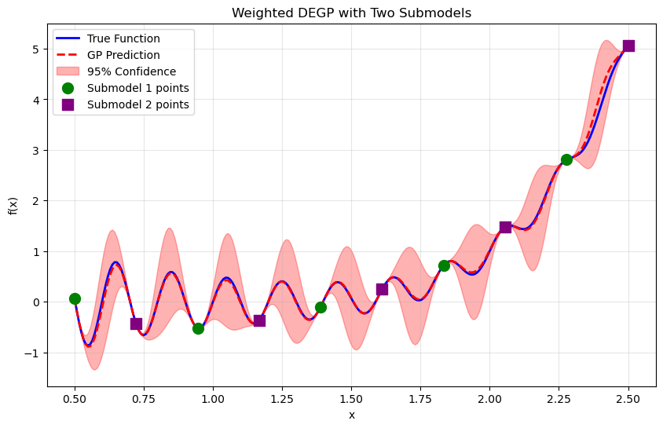
Explanation: Green circles show Submodel 1’s training points (originally at indices 0, 2, 4, 6, 8), and purple squares show Submodel 2’s training points (originally at indices 1, 3, 5, 7, 9). The weighted combination of both submodels produces accurate predictions across the entire domain.
—
Step 14: Demonstrate the indexing mapping#
print("=" * 70)
print("INDEX MAPPING SUMMARY")
print("=" * 70)
print("\nOriginal Data (X_all) --> Reordered Data (X_train):")
print("-" * 70)
print("Submodel 1 points:")
for i in range(len(submodel1_original_indices)):
orig_idx = submodel1_original_indices[i]
print(f" X_all[{orig_idx}] = {X_all[orig_idx,0]:.4f} --> X_train[{i}] = {X_train[i,0]:.4f}")
print("\nSubmodel 2 points:")
for i, orig_idx in enumerate(submodel2_original_indices):
new_idx = len(submodel1_original_indices) + i
print(f" X_all[{orig_idx}] = {X_all[orig_idx,0]:.4f} --> X_train[{new_idx}] = {X_train[new_idx,0]:.4f}")
print("\nSubmodel Indices:")
print("-" * 70)
print(f" Submodel 1: {submodel_indices[0]} (original indices: {submodel1_original_indices})")
print(f" Submodel 2: {submodel_indices[1]} (original indices: {submodel2_original_indices})")
print("=" * 70)
======================================================================
INDEX MAPPING SUMMARY
======================================================================
Original Data (X_all) --> Reordered Data (X_train):
----------------------------------------------------------------------
Submodel 1 points:
X_all[0] = 0.5000 --> X_train[0] = 0.5000
X_all[2] = 0.9444 --> X_train[1] = 0.9444
X_all[4] = 1.3889 --> X_train[2] = 1.3889
X_all[6] = 1.8333 --> X_train[3] = 1.8333
X_all[8] = 2.2778 --> X_train[4] = 2.2778
Submodel 2 points:
X_all[1] = 0.7222 --> X_train[5] = 0.7222
X_all[3] = 1.1667 --> X_train[6] = 1.1667
X_all[5] = 1.6111 --> X_train[7] = 1.6111
X_all[7] = 2.0556 --> X_train[8] = 2.0556
X_all[9] = 2.5000 --> X_train[9] = 2.5000
Submodel Indices:
----------------------------------------------------------------------
Submodel 1: [0, 1, 2, 3, 4] (original indices: [0, 2, 4, 6, 8])
Submodel 2: [5, 6, 7, 8, 9] (original indices: [1, 3, 5, 7, 9])
======================================================================
Explanation: This summary shows the complete transformation from original to reordered indices. Understanding this mapping is crucial for interpreting results and debugging multi-submodel configurations.
—
Step 15: Visualize training point reordering#
fig, axes = plt.subplots(1, 2, figsize=(14, 5))
# Left: Original X_all with submodel assignments
axes[0].scatter(X_all[submodel1_original_indices],
np.zeros(len(submodel1_original_indices)),
color='green', s=100, alpha=0.8, marker='o', label='Submodel 1')
axes[0].scatter(X_all[submodel2_original_indices],
np.zeros(len(submodel2_original_indices)),
color='purple', s=100, alpha=0.8, marker='s', label='Submodel 2')
axes[0].set_xlim(lb_x, ub_x)
axes[0].set_ylim(-0.5, 0.5)
axes[0].set_xlabel('x')
axes[0].set_title('Original X_all: Submodel Assignments')
axes[0].legend()
axes[0].grid(alpha=0.3)
axes[0].set_yticks([])
# Right: Reordered X_train
colors = ['green']*5 + ['purple']*5
markers = ['o']*5 + ['s']*5
for i, (x, color, marker) in enumerate(zip(X_train.ravel(), colors, markers)):
axes[1].scatter(x, i, c=color, s=100, alpha=0.8, marker=marker)
submodel = "SM1" if i < 5 else "SM2"
axes[1].text(x, i, f' idx={i} ({submodel})', va='center', fontsize=8)
axes[1].set_xlim(lb_x, ub_x)
axes[1].set_xlabel('x')
axes[1].set_ylabel('X_train index')
axes[1].set_title('Reordered X_train: Contiguous Submodel Indices')
axes[1].grid(alpha=0.3)
plt.tight_layout()
plt.show()
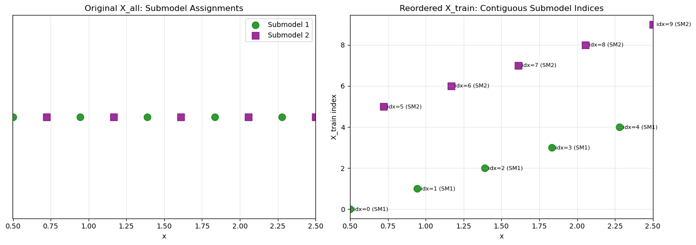
Explanation:
The left panel shows the original spatial distribution of training points, color-coded by submodel assignment. The right panel shows how these points are reordered in X_train, with Submodel 1’s points (green circles) at indices 0-4 and Submodel 2’s points (purple squares) at indices 5-9.
—
Step 16: Analyze individual submodel contributions#
plt.figure(figsize=(10, 6))
plt.plot(X_test, y_true, 'b-', label='True Function', linewidth=2, alpha=0.3)
plt.plot(X_test.flatten(), submodel_vals[0].flatten(), 'g-',
label='Submodel 1 Prediction', linewidth=2, alpha=0.7)
plt.plot(X_test.flatten(), submodel_vals[1].flatten(), 'purple', linestyle='--',
label='Submodel 2 Prediction', linewidth=2, alpha=0.7)
plt.scatter(X_train[:5],
f_fun(X_train[:5, 0].flatten()).reshape(-1, 1),
color='green', s=100, marker='o', label='Submodel 1 points', zorder=5)
plt.scatter(X_train[5:],
f_fun(X_train[5:, 0].flatten()).reshape(-1, 1),
color='purple', s=100, marker='s', label='Submodel 2 points', zorder=5)
plt.title("Individual Submodel Predictions")
plt.xlabel("x")
plt.ylabel("f(x)")
plt.legend()
plt.grid(alpha=0.3)
plt.show()
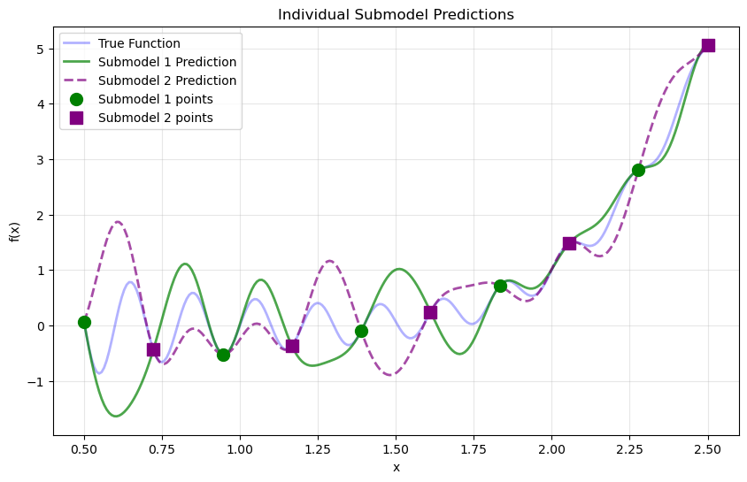
Explanation: This visualization shows how each submodel makes predictions across the entire domain:
Submodel 1 (green solid line) is most confident near its training points
Submodel 2 (purple dashed line) is most confident near its training points
The final WDEGP prediction (shown in previous plots) is a weighted combination of both
Notice how each submodel can make predictions everywhere, but the weighting mechanism emphasizes each submodel’s contribution near its own training locations.
—
Summary#
This tutorial demonstrates how to construct multiple submodels in WDEGP, each with its own derivative observations:
Key Requirements:
Define submodel groups: Decide which training points belong to each submodel
Reorder ALL training data: Arrange points so each submodel’s indices are contiguous
Use contiguous indices: Each submodel references its points with sequential indices
Share function values: All submodels receive function values at ALL training points
Separate derivatives: Each submodel receives derivatives only at its designated points
Step-by-Step Process:
# Step 1: Define which points belong to each submodel
submodel1_original_indices = [0, 2, 4, 6, 8]
submodel2_original_indices = [1, 3, 5, 7, 9]
# Step 2: Reorder ALL training data
X_train = np.vstack([X_all[submodel1_original_indices],
X_all[submodel2_original_indices]])
# Step 3: Define contiguous submodel indices
submodel_indices = [[0, 1, 2, 3, 4], # Submodel 1
[5, 6, 7, 8, 9]] # Submodel 2
# Step 4: Compute function values at ALL points (shared)
y_function_values = f_fun(X_train.flatten()).reshape(-1, 1)
# Step 5: Compute derivatives for each submodel separately
d1_sm1, d2_sm1 = ... # derivatives at X_train[0:5]
d1_sm2, d2_sm2 = ... # derivatives at X_train[5:10]
# Step 6: Package data for each submodel
submodel_data = [
[y_function_values, d1_sm1, d2_sm1], # Submodel 1
[y_function_values, d1_sm2, d2_sm2] # Submodel 2
]
Why Use Multiple Submodels:
Spatial partitioning: Different regions of input space may have different characteristics
Parallel computation: Submodels can be evaluated independently
Adaptive refinement: Add more submodels in regions requiring higher accuracy
Resource allocation: Focus expensive derivative computations where most beneficial
Ensemble modeling: Combine multiple local experts for robust predictions
Comparison with Single Submodel:
Single submodel (Example 3): One model uses derivatives at selected points
Multiple submodels (Example 4): Each model specializes in a different region
Weighted combination: WDEGP automatically balances submodel contributions
Common Use Cases:
Domain decomposition for high-dimensional problems
Adaptive mesh refinement strategies
Multi-fidelity modeling with region-specific data sources
Distributed/parallel computation across multiple processors
Ensemble methods for uncertainty quantification
This multi-submodel approach provides maximum flexibility in how derivative information is distributed across the input space while maintaining the mathematical rigor of the WDEGP framework.
Example 5: 2D Weighted DEGP with Heterogeneous Derivative Orders Across Submodels#
Overview#
This example demonstrates a heterogeneous derivative-enhanced GP (WDEGP) for a 2D function where training points are strategically grouped into submodels with different derivative orders. This approach allows for adaptive allocation of computational resources: expensive high-order derivatives are computed only where most beneficial, while simpler regions use lower-order or no derivatives.
Key Innovation: Unlike Example 4 where all submodels used the same derivative order, this example shows how to use different derivative orders for different submodels, enabling more efficient modeling strategies.
Key concepts covered:
Heterogeneous derivative orders: Different submodels use different derivative orders (0th, 1st, 2nd order)
Strategic grouping: Corner points (no derivatives), edge points (1st order), center points (full 2nd order)
Automatic data reordering: Training data is reorganized for compatibility with GP indexing
Selective derivative utilization: Only points in submodel groups contribute derivative information
2D function approximation: Demonstrates the approach on the six-hump camel function
SymPy differentiation: Uses symbolic differentiation for exact derivative computation
This approach is particularly useful for:
Computational efficiency: Focus expensive high-order derivatives where most informative
Adaptive refinement: Use detailed derivative information in complex regions
Resource allocation: Balance accuracy and computational cost
Multi-fidelity modeling: Different data quality/cost in different regions
—
Step 1: Import required packages#
import numpy as np
import sympy as sp
import itertools
from wdegp.wdegp import wdegp
from matplotlib import pyplot as plt
import utils
plt.rcParams.update({'font.size': 12})
Explanation:
We import the necessary modules including symbolic differentiation (sympy), the WDEGP framework, and visualization tools. Unlike previous examples that used hypercomplex automatic differentiation, this example uses SymPy for exact symbolic derivatives.
—
Step 2: Set configuration parameters#
# Random seed for reproducibility
random_seed = 0
np.random.seed(random_seed)
# GP configuration
n_order = 2 # Maximum derivative order (for center submodel - 2nd order)
n_bases = 2
lb_x, ub_x = -1.0, 1.0
lb_y, ub_y = -1.0, 1.0
points_per_axis = 4
kernel = "RQ"
kernel_type = "isotropic"
normalize = True
n_restart_optimizer = 15
swarm_size = 250
test_points_per_axis = 35
# Submodel point groups (using original grid indices)
submodel_point_groups = [
[0, 3, 12, 15], # Submodel 1: Corners (no derivatives)
[1, 2, 4, 8, 7, 11, 13, 14], # Submodel 2: Edges (1st order)
[5, 6, 9, 10] # Submodel 3: Center (2nd order)
]
Explanation: Configuration parameters define three distinct submodels:
Submodel 1 (Corners): 4 points at domain corners - no derivatives (order 0)
Submodel 2 (Edges): 8 points along domain edges - 1st order derivatives only
Submodel 3 (Center): 4 points in domain interior - full 2nd order derivatives
This heterogeneous approach concentrates expensive high-order derivative computations in the center region where the function may be most complex, while using cheaper evaluations at corners and edges.
Total training data: - 16 training points total - 4 corners: function values only - 8 edges: function values + 1st derivatives (∂/∂x₁, ∂/∂x₂) - 4 center: function values + up to 2nd derivatives (∂/∂x₁, ∂/∂x₂, ∂²/∂x₁², ∂²/∂x₁∂x₂, ∂²/∂x₂²)
—
Step 3: Define the six-hump camel function#
def six_hump_camel_function(X, alg=np):
"""
Six-hump camel function - a challenging 2D benchmark.
Features:
- Multiple local minima
- Two global minima at approximately (0.0898, -0.7126) and (-0.0898, 0.7126)
- Varying curvature across the domain
Parameters
----------
X : array_like
Input array of shape (n, 2) with columns [x1, x2]
alg : module
Algorithm module (np for standard evaluation)
Returns
-------
array_like
Function values
"""
x1 = X[:, 0]
x2 = X[:, 1]
return ((4 - 2.1 * x1**2 + (x1**4)/3.0) * x1**2 +
x1*x2 + (-4 + 4*x2**2) * x2**2)
Explanation:
The six-hump camel function is a standard optimization benchmark with multiple local minima and varying complexity across its domain. The function is defined with an alg parameter to maintain compatibility with previous examples, though in this case we’ll compute derivatives symbolically with SymPy.
—
Step 4: Generate initial training points#
def generate_training_points():
"""Generate a 4×4 grid of training points."""
x_vals = np.linspace(lb_x, ub_x, points_per_axis)
y_vals = np.linspace(lb_y, ub_y, points_per_axis)
return np.array(list(itertools.product(x_vals, y_vals)))
X_train_initial = generate_training_points()
print(f"Training points shape: {X_train_initial.shape}")
print(f"Total training points: {len(X_train_initial)}")
print(f"\nGrid layout (indices):")
grid_indices = np.arange(16).reshape(4, 4)
print(grid_indices)
Training points shape: (16, 2)
Total training points: 16
Grid layout (indices):
[[ 0 1 2 3]
[ 4 5 6 7]
[ 8 9 10 11]
[12 13 14 15]]
Explanation:
We generate a 4×4 uniform grid (16 points total) using itertools.product. The grid indexing is:
Grid layout:
[ 0 1 2 3] ← Top row (y = 1.0)
[ 4 5 6 7]
[ 8 9 10 11]
[12 13 14 15] ← Bottom row (y = -1.0)
This indexing helps understand the submodel groupings: - Corners: [0, 3, 12, 15] - Edges: [1, 2, 4, 8, 7, 11, 13, 14] - Center: [5, 6, 9, 10]
—
Step 5: Visualize submodel groupings#
def visualize_submodel_groups(X_train, submodel_groups):
"""Visualize which points belong to which submodel."""
fig, ax = plt.subplots(figsize=(8, 8))
colors = ['red', 'blue', 'green']
labels = ['Corners (no deriv)', 'Edges (1st order)', 'Center (2nd order)']
markers = ['s', 'o', '^']
for i, (group, color, label, marker) in enumerate(zip(submodel_groups, colors, labels, markers)):
points = X_train[group]
ax.scatter(points[:, 0], points[:, 1], c=color, s=200,
marker=marker, label=label, edgecolors='black', linewidths=2, zorder=5)
# Add index labels
for idx in group:
ax.text(X_train[idx, 0], X_train[idx, 1] + 0.08, str(idx),
fontsize=9, ha='center', fontweight='bold')
ax.set_xlabel('$x_1$')
ax.set_ylabel('$x_2$')
ax.set_title('Submodel Point Groupings (Original Indices)')
ax.legend(loc='upper right')
ax.grid(True, alpha=0.3)
ax.set_aspect('equal')
plt.tight_layout()
plt.show()
visualize_submodel_groups(X_train_initial, submodel_point_groups)
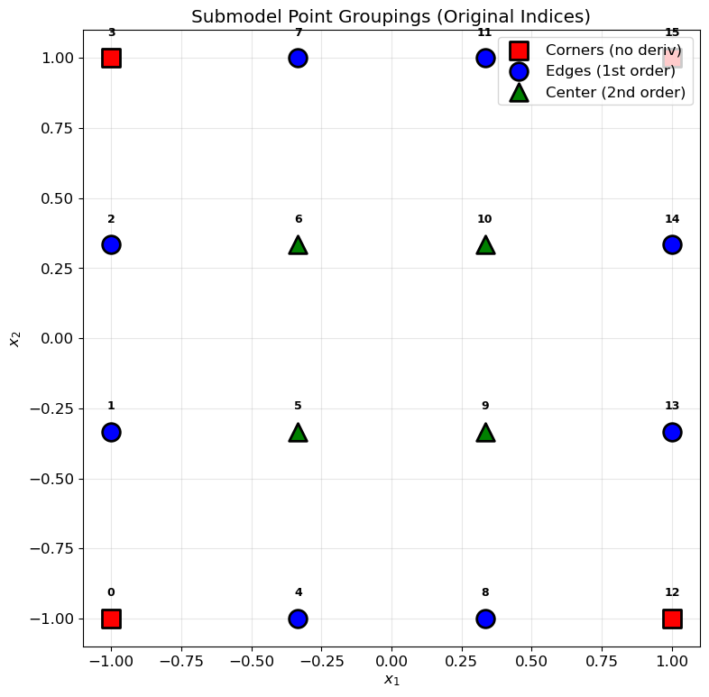
Explanation: This visualization shows the strategic placement of different derivative orders:
Red squares (corners): Simplest regions - function values only
Blue circles (edges): Moderate complexity - 1st order derivatives
Green triangles (center): Highest complexity - full 2nd order derivatives
This heterogeneous approach reflects the intuition that the center region of the six-hump camel function has the most intricate behavior (multiple local minima), warranting more detailed derivative information.
—
Step 6: Reorder training data for contiguous indexing#
def reorder_training_data(X_train_initial, submodel_point_groups):
"""
Reorder training data so each submodel's points are contiguous.
Original indices are remapped to sequential positions:
- Submodel 1 points → indices 0-3
- Submodel 2 points → indices 4-11
- Submodel 3 points → indices 12-15
Returns
-------
X_train_reordered : array
Reordered training points
sequential_indices : list of lists
Contiguous index ranges for each submodel
reorder_map : list
Mapping from new to original indices
"""
# Flatten all submodel indices into a single reordering
arbitrary_flat = list(itertools.chain.from_iterable(submodel_point_groups))
# Find any unused points (none in this example, but code is general)
all_indices = set(range(X_train_initial.shape[0]))
used_indices = set(arbitrary_flat)
unused_indices = sorted(list(all_indices - used_indices))
# Create reordering map
reorder_map = arbitrary_flat + unused_indices
X_train_reordered = X_train_initial[reorder_map]
# Generate sequential indices for each submodel
sequential_indices = []
current_pos = 0
for group in submodel_point_groups:
group_len = len(group)
sequential_indices.append(list(range(current_pos, current_pos + group_len)))
current_pos += group_len
return X_train_reordered, sequential_indices, reorder_map
X_train_reordered, sequential_indices, reorder_map = reorder_training_data(
X_train_initial, submodel_point_groups
)
print("Reordered training points shape:", X_train_reordered.shape)
print("\nSequential submodel indices:")
print(f" Submodel 1 (corners): {sequential_indices[0]}")
print(f" Submodel 2 (edges): {sequential_indices[1]}")
print(f" Submodel 3 (center): {sequential_indices[2]}")
print("\nReordering map:")
print(f" Original → Reordered: {reorder_map}")
Reordered training points shape: (16, 2)
Sequential submodel indices:
Submodel 1 (corners): [0, 1, 2, 3]
Submodel 2 (edges): [4, 5, 6, 7, 8, 9, 10, 11]
Submodel 3 (center): [12, 13, 14, 15]
Reordering map:
Original → Reordered: [0, 3, 12, 15, 1, 2, 4, 8, 7, 11, 13, 14, 5, 6, 9, 10]
Explanation: CRITICAL REORDERING: This function reorganizes ALL training points so that each submodel’s points form a contiguous block:
Before reordering (original indices): - Submodel 1: [0, 3, 12, 15] (non-contiguous) - Submodel 2: [1, 2, 4, 8, 7, 11, 13, 14] (non-contiguous) - Submodel 3: [5, 6, 9, 10] (non-contiguous)
After reordering (sequential indices in X_train_reordered):
- Submodel 1: [0, 1, 2, 3] (contiguous)
- Submodel 2: [4, 5, 6, 7, 8, 9, 10, 11] (contiguous)
- Submodel 3: [12, 13, 14, 15] (contiguous)
The reorder_map shows how original indices map to new positions:
[0, 3, 12, 15, 1, 2, 4, 8, 7, 11, 13, 14, 5, 6, 9, 10]
This means X_train_reordered[0] = X_train_initial[0], X_train_reordered[1] = X_train_initial[3], etc.
—
Step 7: Prepare heterogeneous submodel data with SymPy#
def six_hump_camel_symbolic():
"""
Create symbolic expression for the six-hump camel function.
Returns
-------
expr : sympy expression
Symbolic function
x1, x2 : sympy symbols
Input variables
"""
x1, x2 = sp.symbols('x1 x2', real=True)
expr = ((4 - 2.1 * x1**2 + (x1**4)/3.0) * x1**2 +
x1*x2 + (-4 + 4*x2**2) * x2**2)
return expr, x1, x2
def compute_derivatives_sympy(expr, x1, x2):
"""
Compute all partial derivatives up to 2nd order using SymPy.
Parameters
----------
expr : sympy expression
Function to differentiate
x1, x2 : sympy symbols
Variables
Returns
-------
derivatives : dict
Dictionary mapping derivative indices to lambdified functions
Key format: (i, j) where i = order w.r.t. x1, j = order w.r.t. x2
"""
derivatives = {}
# First order derivatives
derivatives[(1, 0)] = sp.lambdify((x1, x2), sp.diff(expr, x1), 'numpy') # ∂f/∂x1
derivatives[(0, 1)] = sp.lambdify((x1, x2), sp.diff(expr, x2), 'numpy') # ∂f/∂x2
# Second order derivatives
derivatives[(2, 0)] = sp.lambdify((x1, x2), sp.diff(expr, x1, 2), 'numpy') # ∂²f/∂x1²
derivatives[(1, 1)] = sp.lambdify((x1, x2), sp.diff(expr, x1, x2), 'numpy') # ∂²f/∂x1∂x2
derivatives[(0, 2)] = sp.lambdify((x1, x2), sp.diff(expr, x2, 2), 'numpy') # ∂²f/∂x2²
return derivatives
def prepare_submodel_data(X_train, submodel_indices):
"""
Prepare submodel data with heterogeneous derivative orders using SymPy.
Submodel 1: Function values only (no derivatives)
Submodel 2: Function values + 1st order derivatives
Submodel 3: Function values + up to 2nd order derivatives
Parameters
----------
X_train : array
Reordered training points
submodel_indices : list of lists
Contiguous indices for each submodel
Returns
-------
submodel_data : list of lists
Data for each submodel
derivative_specs : list of lists
Derivative specifications for each submodel (OTI format)
"""
# Create symbolic function and compute derivatives
print("Computing symbolic derivatives with SymPy...")
expr, x1, x2 = six_hump_camel_symbolic()
all_derivatives = compute_derivatives_sympy(expr, x1, x2)
# Define derivative structures for each submodel using OTI format
derivative_specs = [
[], # Submodel 1: no derivatives
utils.gen_OTI_indices(n_bases, 1), # Submodel 2: ∂/∂x₁, ∂/∂x₂
utils.gen_OTI_indices(n_bases, 2) # Submodel 3: all up to 2nd order
]
# Create tuple version for easier iteration with SymPy
derivative_specs_tuples = [
[], # Submodel 1: no derivatives
[(1, 0), (0, 1)], # Submodel 2: 1st order only
[(1, 0), (0, 1), (2, 0), (1, 1), (0, 2)] # Submodel 3: up to 2nd order
]
print("Derivative specifications:")
for i, spec in enumerate(derivative_specs):
if len(spec) == 0:
print(f" Submodel {i+1}: No derivatives")
else:
print(f" Submodel {i+1}: {len(spec)} derivative types")
print(f" Examples: {spec[:3]}")
# Compute function values at ALL training points (shared by all submodels)
y_function_values = six_hump_camel_function(X_train, alg=np).reshape(-1, 1)
submodel_data = []
for k, point_indices in enumerate(submodel_indices):
print(f"\nProcessing Submodel {k+1} (indices {point_indices[0]}-{point_indices[-1]})...")
# Extract submodel points
X_sub = X_train[point_indices]
# Build data list: function values (all points) + derivatives (submodel points)
current_submodel_data = [y_function_values]
current_derivative_spec = derivative_specs_tuples[k]
# Compute derivatives for this submodel
for deriv_idx in current_derivative_spec:
i, j = deriv_idx
deriv_func = all_derivatives[(i, j)]
# Evaluate derivative at submodel points
deriv_values = np.array([
deriv_func(X_sub[pt, 0], X_sub[pt, 1])
for pt in range(len(X_sub))
]).reshape(-1, 1)
current_submodel_data.append(deriv_values)
print(f" Function values: shape {current_submodel_data[0].shape}")
print(f" Derivative arrays: {len(current_submodel_data) - 1}")
submodel_data.append(current_submodel_data)
return submodel_data, derivative_specs
submodel_data, derivative_specs = prepare_submodel_data(
X_train_reordered, sequential_indices
)
print(f"\n{'='*60}")
print("Summary of submodel data:")
for i, data in enumerate(submodel_data):
print(f" Submodel {i+1}: {len(data)} arrays")
print(f" - Array 0: Function values at ALL {len(data[0])} points")
if len(sequential_indices[i]) > 0 and len(data) > 1:
print(f" - Arrays 1-{len(data)-1}: Derivatives at {len(sequential_indices[i])} points")
# Store for later verification
y_function_values = submodel_data[0][0]
Computing symbolic derivatives with SymPy...
Derivative specifications:
Submodel 1: No derivatives
Submodel 2: 1 derivative types
Examples: [[[[1, 1]], [[2, 1]]]]
Submodel 3: 2 derivative types
Examples: [[[[1, 1]], [[2, 1]]], [[[1, 2]], [[1, 1], [2, 1]], [[2, 2]]]]
Processing Submodel 1 (indices 0-3)...
Function values: shape (16, 1)
Derivative arrays: 0
Processing Submodel 2 (indices 4-11)...
Function values: shape (16, 1)
Derivative arrays: 2
Processing Submodel 3 (indices 12-15)...
Function values: shape (16, 1)
Derivative arrays: 5
============================================================
Summary of submodel data:
Submodel 1: 1 arrays
- Array 0: Function values at ALL 16 points
Submodel 2: 3 arrays
- Array 0: Function values at ALL 16 points
- Arrays 1-2: Derivatives at 8 points
Submodel 3: 6 arrays
- Array 0: Function values at ALL 16 points
- Arrays 1-5: Derivatives at 4 points
Explanation: This step uses SymPy for symbolic differentiation instead of hypercomplex automatic differentiation:
1. Symbolic Function Definition: Creates a symbolic representation of the six-hump camel function using SymPy symbols.
2. Symbolic Differentiation: SymPy computes exact partial derivatives symbolically:
For 2nd order derivatives: - 1st order: \(\frac{\partial f}{\partial x_1}\), \(\frac{\partial f}{\partial x_2}\) - 2nd order: \(\frac{\partial^2 f}{\partial x_1^2}\), \(\frac{\partial^2 f}{\partial x_1 \partial x_2}\), \(\frac{\partial^2 f}{\partial x_2^2}\)
3. Lambdification:
Symbolic expressions are converted to fast numerical functions using sp.lambdify().
4. Heterogeneous Derivative Selection: Each submodel selects different derivatives:
Submodel 1: No derivatives
Submodel 2:
[(1,0), (0,1)]- first-order partialsSubmodel 3:
[(1,0), (0,1), (2,0), (1,1), (0,2)]- all up to 2nd order
5. OTI Format Compatibility:
Uses utils.gen_OTI_indices() to generate derivative specifications in the format expected by WDEGP.
Advantages of SymPy: - Exact derivatives (no numerical approximation) - Easy to understand and modify - No external dependencies beyond standard scientific Python - Can inspect symbolic expressions for verification
Data Structure:
Each submodel gets: [function_values, deriv1, deriv2, ...]
- function_values: shape (16, 1) - ALL training points
- deriv1, deriv2, ...: shape (n_sub, 1) - only this submodel’s points
—
Step 8: Build and optimize the WDEGP model#
def build_and_optimize_gp(X_train, submodel_data, submodel_indices, derivative_specs):
"""
Build and optimize the weighted DEGP model.
Parameters
----------
X_train : array
Reordered training points (all 16 points)
submodel_data : list of lists
Data for each submodel
submodel_indices : list of lists
Contiguous indices for each submodel
derivative_specs : list of lists
Derivative specifications for each submodel
Returns
-------
gp_model : wdegp
Trained GP model
params : dict
Optimized hyperparameters
"""
print("Building WDEGP model...")
gp_model = wdegp(
X_train,
submodel_data,
n_order,
n_bases,
submodel_indices,
derivative_specs,
normalize=normalize,
kernel=kernel,
kernel_type=kernel_type
)
print("Optimizing hyperparameters...")
params = gp_model.optimize_hyperparameters(
optimizer='jade',
pop_size=100,
n_generations=15,
local_opt_every=None,
debug=False
)
print("Optimization complete.")
return gp_model, params
gp_model, params = build_and_optimize_gp(
X_train_reordered, submodel_data, sequential_indices, derivative_specs
)
Building WDEGP model...
Optimizing hyperparameters...
Optimization complete.
Explanation: The WDEGP model is initialized with:
X_train: Reordered training locations (16 points)submodel_data: Three submodels with heterogeneous derivative orderssubmodel_indices: Contiguous index ranges for each submodelderivative_specs: Different derivative orders per submodelkernel="RQ": Rational Quadratic kernel for flexibilitykernel_type="isotropic": Same length scale in all directions
The model automatically computes weights to combine the three submodels, balancing: - Submodel 1: Simple function-only interpolation at corners - Submodel 2: First-order gradient-enhanced predictions at edges - Submodel 3: High-order derivative-enhanced predictions at center
—
Step 9: Evaluate model on test grid#
# Create dense test grid
x_lin = np.linspace(lb_x, ub_x, test_points_per_axis)
y_lin = np.linspace(lb_y, ub_y, test_points_per_axis)
X1_grid, X2_grid = np.meshgrid(x_lin, y_lin)
X_test = np.column_stack([X1_grid.ravel(), X2_grid.ravel()])
print(f"Test grid: {test_points_per_axis}×{test_points_per_axis} = {len(X_test)} points")
# Predict on test grid
y_pred, submodel_vals = gp_model.predict(
X_test, params, calc_cov=False, return_submodels=True
)
# Compute ground truth and error
y_true = six_hump_camel_function(X_test, alg=np)
nrmse = utils.nrmse(y_true, y_pred)
abs_error = np.abs(y_true - y_pred)
print(f"\nModel Performance:")
print(f" NRMSE: {nrmse:.6f}")
print(f" Max absolute error: {abs_error.max():.6f}")
print(f" Mean absolute error: {abs_error.mean():.6f}")
Test grid: 35×35 = 1225 points
Model Performance:
NRMSE: 0.020719
Max absolute error: 0.479449
Mean absolute error: 0.050244
Explanation: The model is evaluated on a 35×35 grid (1225 test points). The prediction is a weighted combination of all three submodels, with weights automatically computed based on proximity to each submodel’s training points and their respective uncertainties.
—
Step 10: Verify interpolation with finite differences#
# Verify function value interpolation at all reordered training points
y_pred_train = gp_model.predict(X_train_reordered, params, calc_cov=False)
print("Function value interpolation errors (reordered X_train):")
print("=" * 80)
for i in range(len(X_train_reordered)):
error_abs = abs(y_pred_train[0, i] - y_function_values[i, 0])
error_rel = error_abs / abs(y_function_values[i, 0]) if y_function_values[i, 0] != 0 else error_abs
# Determine which submodel this point belongs to
if i in sequential_indices[0]:
submodel_id = 1
deriv_order = "0th (no deriv)"
elif i in sequential_indices[1]:
submodel_id = 2
deriv_order = "1st order"
else:
submodel_id = 3
deriv_order = "2nd order"
print(f"X_train[{i}] (SM{submodel_id}, {deriv_order}): "
f"x=({X_train_reordered[i, 0]:.2f}, {X_train_reordered[i, 1]:.2f}), "
f"Abs Error = {error_abs:.2e}, Rel Error = {error_rel:.2e}")
max_func_error = np.max(np.abs(y_pred_train.flatten() - y_function_values.flatten()))
print(f"\nMaximum absolute function value error: {max_func_error:.2e}")
# Verify derivative interpolation for Submodel 2 (1st order derivatives)
print("\n" + "=" * 80)
print("Derivative interpolation verification - SUBMODEL 2 (Edges, 1st order):")
print("=" * 80)
# Use small perturbation for finite differences
h = 1e-6
for local_i, global_i in enumerate(sequential_indices[1]):
x_point = X_train_reordered[global_i]
print(f"\nSubmodel 2 at X_train[{global_i}] (original index {submodel_point_groups[1][local_i]})")
print(f" Location: x₁={x_point[0]:.3f}, x₂={x_point[1]:.3f}")
# Verify ∂f/∂x₁
X_plus_x1 = x_point.copy().reshape(1, -1)
X_minus_x1 = x_point.copy().reshape(1, -1)
X_plus_x1[0, 0] += h
X_minus_x1[0, 0] -= h
_, submodel_vals_plus = gp_model.predict(X_plus_x1, params, calc_cov=False, return_submodels=True)
_, submodel_vals_minus = gp_model.predict(X_minus_x1, params, calc_cov=False, return_submodels=True)
fd_deriv_x1 = (submodel_vals_plus[1][0, 0] - submodel_vals_minus[1][0, 0]) / (2 * h)
analytic_deriv_x1 = submodel_data[1][1][local_i, 0]
error_x1_abs = abs(fd_deriv_x1 - analytic_deriv_x1)
error_x1_rel = error_x1_abs / abs(analytic_deriv_x1) if analytic_deriv_x1 != 0 else error_x1_abs
print(f" ∂f/∂x₁ - Analytic: {analytic_deriv_x1:+.6f}, FD: {fd_deriv_x1:+.6f}")
print(f" Abs Error: {error_x1_abs:.2e}, Rel Error: {error_x1_rel:.2e}")
# Verify ∂f/∂x₂
X_plus_x2 = x_point.copy().reshape(1, -1)
X_minus_x2 = x_point.copy().reshape(1, -1)
X_plus_x2[0, 1] += h
X_minus_x2[0, 1] -= h
_, submodel_vals_plus = gp_model.predict(X_plus_x2, params, calc_cov=False, return_submodels=True)
_, submodel_vals_minus = gp_model.predict(X_minus_x2, params, calc_cov=False, return_submodels=True)
fd_deriv_x2 = (submodel_vals_plus[1][0, 0] - submodel_vals_minus[1][0, 0]) / (2 * h)
analytic_deriv_x2 = submodel_data[1][2][local_i, 0]
error_x2_abs = abs(fd_deriv_x2 - analytic_deriv_x2)
error_x2_rel = error_x2_abs / abs(analytic_deriv_x2) if analytic_deriv_x2 != 0 else error_x2_abs
print(f" ∂f/∂x₂ - Analytic: {analytic_deriv_x2:+.6f}, FD: {fd_deriv_x2:+.6f}")
print(f" Abs Error: {error_x2_abs:.2e}, Rel Error: {error_x2_rel:.2e}")
# Verify derivative interpolation for Submodel 3 (up to 2nd order derivatives)
print("\n" + "=" * 80)
print("Derivative interpolation verification - SUBMODEL 3 (Center, up to 2nd order):")
print("=" * 80)
print("Note: Using larger h (1e-5) for 2nd order derivatives to improve numerical stability")
print("=" * 80)
# Use larger perturbation for second-order derivatives
h = 1e-3
for local_i, global_i in enumerate(sequential_indices[2]):
x_point = X_train_reordered[global_i]
print(f"\nSubmodel 3 at X_train[{global_i}] (original index {submodel_point_groups[2][local_i]})")
print(f" Location: x₁={x_point[0]:.3f}, x₂={x_point[1]:.3f}")
# --- First order derivatives (using h=1e-6 for better accuracy) ---
h_first = 1e-6
# ∂f/∂x₁
X_plus_x1 = x_point.copy().reshape(1, -1)
X_minus_x1 = x_point.copy().reshape(1, -1)
X_plus_x1[0, 0] += h_first
X_minus_x1[0, 0] -= h_first
_, submodel_vals_plus = gp_model.predict(X_plus_x1, params, calc_cov=False, return_submodels=True)
_, submodel_vals_minus = gp_model.predict(X_minus_x1, params, calc_cov=False, return_submodels=True)
fd_deriv_x1 = (submodel_vals_plus[2][0, 0] - submodel_vals_minus[2][0, 0]) / (2 * h_first)
analytic_deriv_x1 = submodel_data[2][1][local_i, 0]
error_x1_abs = abs(fd_deriv_x1 - analytic_deriv_x1)
error_x1_rel = error_x1_abs / abs(analytic_deriv_x1) if analytic_deriv_x1 != 0 else error_x1_abs
print(f" ∂f/∂x₁ - Analytic: {analytic_deriv_x1:+.6f}, FD: {fd_deriv_x1:+.6f}")
print(f" Abs Error: {error_x1_abs:.2e}, Rel Error: {error_x1_rel:.2e}")
# ∂f/∂x₂
X_plus_x2 = x_point.copy().reshape(1, -1)
X_minus_x2 = x_point.copy().reshape(1, -1)
X_plus_x2[0, 1] += h_first
X_minus_x2[0, 1] -= h_first
_, submodel_vals_plus = gp_model.predict(X_plus_x2, params, calc_cov=False, return_submodels=True)
_, submodel_vals_minus = gp_model.predict(X_minus_x2, params, calc_cov=False, return_submodels=True)
fd_deriv_x2 = (submodel_vals_plus[2][0, 0] - submodel_vals_minus[2][0, 0]) / (2 * h_first)
analytic_deriv_x2 = submodel_data[2][2][local_i, 0]
error_x2_abs = abs(fd_deriv_x2 - analytic_deriv_x2)
error_x2_rel = error_x2_abs / abs(analytic_deriv_x2) if analytic_deriv_x2 != 0 else error_x2_abs
print(f" ∂f/∂x₂ - Analytic: {analytic_deriv_x2:+.6f}, FD: {fd_deriv_x2:+.6f}")
print(f" Abs Error: {error_x2_abs:.2e}, Rel Error: {error_x2_rel:.2e}")
# --- Second order derivatives (using h=1e-5 for stability) ---
X_center = x_point.reshape(1, -1)
_, submodel_vals_center = gp_model.predict(X_center, params, calc_cov=False, return_submodels=True)
# ∂²f/∂x₁²
X_plus_x1 = x_point.copy().reshape(1, -1)
X_minus_x1 = x_point.copy().reshape(1, -1)
X_plus_x1[0, 0] += h
X_minus_x1[0, 0] -= h
_, submodel_vals_plus = gp_model.predict(X_plus_x1, params, calc_cov=False, return_submodels=True)
_, submodel_vals_minus = gp_model.predict(X_minus_x1, params, calc_cov=False, return_submodels=True)
fd_deriv2_x1x1 = (submodel_vals_plus[2][0, 0] - 2*submodel_vals_center[2][0, 0] +
submodel_vals_minus[2][0, 0]) / (h**2)
analytic_deriv2_x1x1 = submodel_data[2][3][local_i, 0]
error_x1x1_abs = abs(fd_deriv2_x1x1 - analytic_deriv2_x1x1)
error_x1x1_rel = error_x1x1_abs / abs(analytic_deriv2_x1x1) if analytic_deriv2_x1x1 != 0 else error_x1x1_abs
print(f" ∂²f/∂x₁² - Analytic: {analytic_deriv2_x1x1:+.6f}, FD: {fd_deriv2_x1x1:+.6f}")
print(f" Abs Error: {error_x1x1_abs:.2e}, Rel Error: {error_x1x1_rel:.2e}")
# ∂²f/∂x₁∂x₂ (mixed partial)
X_pp = x_point.copy().reshape(1, -1); X_pp[0, 0] += h; X_pp[0, 1] += h
X_pm = x_point.copy().reshape(1, -1); X_pm[0, 0] += h; X_pm[0, 1] -= h
X_mp = x_point.copy().reshape(1, -1); X_mp[0, 0] -= h; X_mp[0, 1] += h
X_mm = x_point.copy().reshape(1, -1); X_mm[0, 0] -= h; X_mm[0, 1] -= h
_, sm_pp = gp_model.predict(X_pp, params, calc_cov=False, return_submodels=True)
_, sm_pm = gp_model.predict(X_pm, params, calc_cov=False, return_submodels=True)
_, sm_mp = gp_model.predict(X_mp, params, calc_cov=False, return_submodels=True)
_, sm_mm = gp_model.predict(X_mm, params, calc_cov=False, return_submodels=True)
fd_deriv2_x1x2 = (sm_pp[2][0, 0] - sm_pm[2][0, 0] - sm_mp[2][0, 0] + sm_mm[2][0, 0]) / (4 * h**2)
analytic_deriv2_x1x2 = submodel_data[2][4][local_i, 0]
error_x1x2_abs = abs(fd_deriv2_x1x2 - analytic_deriv2_x1x2)
error_x1x2_rel = error_x1x2_abs / abs(analytic_deriv2_x1x2) if analytic_deriv2_x1x2 != 0 else error_x1x2_abs
print(f" ∂²f/∂x₁∂x₂ - Analytic: {analytic_deriv2_x1x2:+.6f}, FD: {fd_deriv2_x1x2:+.6f}")
print(f" Abs Error: {error_x1x2_abs:.2e}, Rel Error: {error_x1x2_rel:.2e}")
# ∂²f/∂x₂²
X_plus_x2 = x_point.copy().reshape(1, -1)
X_minus_x2 = x_point.copy().reshape(1, -1)
X_plus_x2[0, 1] += h
X_minus_x2[0, 1] -= h
_, submodel_vals_plus = gp_model.predict(X_plus_x2, params, calc_cov=False, return_submodels=True)
_, submodel_vals_minus = gp_model.predict(X_minus_x2, params, calc_cov=False, return_submodels=True)
fd_deriv2_x2x2 = (submodel_vals_plus[2][0, 0] - 2*submodel_vals_center[2][0, 0] +
submodel_vals_minus[2][0, 0]) / (h**2)
analytic_deriv2_x2x2 = submodel_data[2][5][local_i, 0]
error_x2x2_abs = abs(fd_deriv2_x2x2 - analytic_deriv2_x2x2)
error_x2x2_rel = error_x2x2_abs / abs(analytic_deriv2_x2x2) if analytic_deriv2_x2x2 != 0 else error_x2x2_abs
print(f" ∂²f/∂x₂² - Analytic: {analytic_deriv2_x2x2:+.6f}, FD: {fd_deriv2_x2x2:+.6f}")
print(f" Abs Error: {error_x2x2_abs:.2e}, Rel Error: {error_x2x2_rel:.2e}")
print("\n" + "=" * 80)
print("Interpolation verification complete!")
print("\n" + "=" * 80)
print("SUMMARY:")
print(f" - Function values: enforced at ALL {len(X_train_reordered)} training points")
print(f" - Submodel 1 (Corners): {len(sequential_indices[0])} points with NO derivatives")
print(f" Indices: {sequential_indices[0]} (original: {submodel_point_groups[0]})")
print(f" - Submodel 2 (Edges): {len(sequential_indices[1])} points with 1st order derivatives")
print(f" Indices: {sequential_indices[1]} (original: {submodel_point_groups[1]})")
print(f" Verified: ∂f/∂x₁, ∂f/∂x₂")
print(f" - Submodel 3 (Center): {len(sequential_indices[2])} points with up to 2nd order derivatives")
print(f" Indices: {sequential_indices[2]} (original: {submodel_point_groups[2]})")
print(f" Verified: ∂f/∂x₁, ∂f/∂x₂, ∂²f/∂x₁², ∂²f/∂x₁∂x₂, ∂²f/∂x₂²")
print(f" - Total submodels: 3 (with heterogeneous derivative orders)")
print(f" - Verification method: Finite differences on individual submodels")
print(f" - Note: Used h=1e-3 for 2nd order derivatives (improved numerical stability)")
print("=" * 80)
Function value interpolation errors (reordered X_train):
================================================================================
X_train[0] (SM1, 0th (no deriv)): x=(-1.00, -1.00), Abs Error = 3.25e-12, Rel Error = 1.01e-12
X_train[1] (SM1, 0th (no deriv)): x=(-1.00, 1.00), Abs Error = 2.98e-12, Rel Error = 2.42e-12
X_train[2] (SM1, 0th (no deriv)): x=(1.00, -1.00), Abs Error = 2.00e-12, Rel Error = 1.62e-12
X_train[3] (SM1, 0th (no deriv)): x=(1.00, 1.00), Abs Error = 2.16e-12, Rel Error = 6.68e-13
X_train[4] (SM2, 1st order): x=(-1.00, -0.33), Abs Error = 1.75e-10, Rel Error = 8.05e-11
X_train[5] (SM2, 1st order): x=(-1.00, 0.33), Abs Error = 5.98e-11, Rel Error = 3.97e-11
X_train[6] (SM2, 1st order): x=(-0.33, -1.00), Abs Error = 8.69e-11, Rel Error = 1.15e-10
X_train[7] (SM2, 1st order): x=(0.33, -1.00), Abs Error = 8.81e-11, Rel Error = 1.03e-09
X_train[8] (SM2, 1st order): x=(-0.33, 1.00), Abs Error = 6.54e-11, Rel Error = 7.63e-10
X_train[9] (SM2, 1st order): x=(0.33, 1.00), Abs Error = 1.16e-10, Rel Error = 1.55e-10
X_train[10] (SM2, 1st order): x=(1.00, -0.33), Abs Error = 1.27e-10, Rel Error = 8.42e-11
X_train[11] (SM2, 1st order): x=(1.00, 0.33), Abs Error = 1.62e-11, Rel Error = 7.45e-12
X_train[12] (SM3, 2nd order): x=(-0.33, -0.33), Abs Error = 1.32e-08, Rel Error = 9.74e-08
X_train[13] (SM3, 2nd order): x=(-0.33, 0.33), Abs Error = 1.25e-08, Rel Error = 1.44e-07
X_train[14] (SM3, 2nd order): x=(0.33, -0.33), Abs Error = 1.85e-08, Rel Error = 2.12e-07
X_train[15] (SM3, 2nd order): x=(0.33, 0.33), Abs Error = 1.41e-08, Rel Error = 1.04e-07
Maximum absolute function value error: 1.85e-08
================================================================================
Derivative interpolation verification - SUBMODEL 2 (Edges, 1st order):
================================================================================
Submodel 2 at X_train[4] (original index 1)
Location: x₁=-1.000, x₂=-0.333
∂f/∂x₁ - Analytic: -1.933333, FD: -1.933338
Abs Error: 4.84e-06, Rel Error: 2.50e-06
∂f/∂x₂ - Analytic: +1.074074, FD: +1.074063
Abs Error: 1.13e-05, Rel Error: 1.05e-05
Submodel 2 at X_train[5] (original index 2)
Location: x₁=-1.000, x₂=0.333
∂f/∂x₁ - Analytic: -1.266667, FD: -1.266556
Abs Error: 1.11e-04, Rel Error: 8.75e-05
∂f/∂x₂ - Analytic: -3.074074, FD: -3.074189
Abs Error: 1.15e-04, Rel Error: 3.75e-05
Submodel 2 at X_train[6] (original index 4)
Location: x₁=-0.333, x₂=-1.000
∂f/∂x₁ - Analytic: -3.363786, FD: -3.363700
Abs Error: 8.56e-05, Rel Error: 2.54e-05
∂f/∂x₂ - Analytic: -8.333333, FD: -8.333410
Abs Error: 7.62e-05, Rel Error: 9.15e-06
Submodel 2 at X_train[7] (original index 8)
Location: x₁=0.333, x₂=-1.000
∂f/∂x₁ - Analytic: +1.363786, FD: +1.363731
Abs Error: 5.47e-05, Rel Error: 4.01e-05
∂f/∂x₂ - Analytic: -7.666667, FD: -7.666564
Abs Error: 1.02e-04, Rel Error: 1.34e-05
Submodel 2 at X_train[8] (original index 7)
Location: x₁=-0.333, x₂=1.000
∂f/∂x₁ - Analytic: -1.363786, FD: -1.363794
Abs Error: 8.25e-06, Rel Error: 6.05e-06
∂f/∂x₂ - Analytic: +7.666667, FD: +7.666706
Abs Error: 3.93e-05, Rel Error: 5.12e-06
Submodel 2 at X_train[9] (original index 11)
Location: x₁=0.333, x₂=1.000
∂f/∂x₁ - Analytic: +3.363786, FD: +3.363763
Abs Error: 2.26e-05, Rel Error: 6.71e-06
∂f/∂x₂ - Analytic: +8.333333, FD: +8.333410
Abs Error: 7.62e-05, Rel Error: 9.15e-06
Submodel 2 at X_train[10] (original index 13)
Location: x₁=1.000, x₂=-0.333
∂f/∂x₁ - Analytic: +1.266667, FD: +1.266682
Abs Error: 1.51e-05, Rel Error: 1.19e-05
∂f/∂x₂ - Analytic: +3.074074, FD: +3.074000
Abs Error: 7.36e-05, Rel Error: 2.39e-05
Submodel 2 at X_train[11] (original index 14)
Location: x₁=1.000, x₂=0.333
∂f/∂x₁ - Analytic: +1.933333, FD: +1.933401
Abs Error: 6.78e-05, Rel Error: 3.51e-05
∂f/∂x₂ - Analytic: -1.074074, FD: -1.074094
Abs Error: 2.02e-05, Rel Error: 1.88e-05
================================================================================
Derivative interpolation verification - SUBMODEL 3 (Center, up to 2nd order):
================================================================================
Note: Using larger h (1e-5) for 2nd order derivatives to improve numerical stability
================================================================================
Submodel 3 at X_train[12] (original index 5)
Location: x₁=-0.333, x₂=-0.333
∂f/∂x₁ - Analytic: -2.697119, FD: -2.694116
Abs Error: 3.00e-03, Rel Error: 1.11e-03
∂f/∂x₂ - Analytic: +1.740741, FD: +1.741412
Abs Error: 6.71e-04, Rel Error: 3.86e-04
∂²f/∂x₁² - Analytic: +5.323457, FD: +5.333346
Abs Error: 9.89e-03, Rel Error: 1.86e-03
∂²f/∂x₁∂x₂ - Analytic: +1.000000, FD: +0.997820
Abs Error: 2.18e-03, Rel Error: 2.18e-03
∂²f/∂x₂² - Analytic: -2.666667, FD: -2.656455
Abs Error: 1.02e-02, Rel Error: 3.83e-03
Submodel 3 at X_train[13] (original index 6)
Location: x₁=-0.333, x₂=0.333
∂f/∂x₁ - Analytic: -2.030453, FD: -2.030986
Abs Error: 5.33e-04, Rel Error: 2.63e-04
∂f/∂x₂ - Analytic: -2.407407, FD: -2.407627
Abs Error: 2.20e-04, Rel Error: 9.14e-05
∂²f/∂x₁² - Analytic: +5.323457, FD: +5.322135
Abs Error: 1.32e-03, Rel Error: 2.48e-04
∂²f/∂x₁∂x₂ - Analytic: +1.000000, FD: +1.000244
Abs Error: 2.44e-04, Rel Error: 2.44e-04
∂²f/∂x₂² - Analytic: -2.666667, FD: -2.668263
Abs Error: 1.60e-03, Rel Error: 5.99e-04
Submodel 3 at X_train[14] (original index 9)
Location: x₁=0.333, x₂=-0.333
∂f/∂x₁ - Analytic: +2.030453, FD: +2.029978
Abs Error: 4.74e-04, Rel Error: 2.34e-04
∂f/∂x₂ - Analytic: +2.407407, FD: +2.407627
Abs Error: 2.20e-04, Rel Error: 9.14e-05
∂²f/∂x₁² - Analytic: +5.323457, FD: +5.327205
Abs Error: 3.75e-03, Rel Error: 7.04e-04
∂²f/∂x₁∂x₂ - Analytic: +1.000000, FD: +0.998410
Abs Error: 1.59e-03, Rel Error: 1.59e-03
∂²f/∂x₂² - Analytic: -2.666667, FD: -2.665492
Abs Error: 1.17e-03, Rel Error: 4.41e-04
Submodel 3 at X_train[15] (original index 10)
Location: x₁=0.333, x₂=0.333
∂f/∂x₁ - Analytic: +2.697119, FD: +2.697485
Abs Error: 3.66e-04, Rel Error: 1.36e-04
∂f/∂x₂ - Analytic: -1.740741, FD: -1.742294
Abs Error: 1.55e-03, Rel Error: 8.92e-04
∂²f/∂x₁² - Analytic: +5.323457, FD: +5.328717
Abs Error: 5.26e-03, Rel Error: 9.88e-04
∂²f/∂x₁∂x₂ - Analytic: +1.000000, FD: +1.000260
Abs Error: 2.60e-04, Rel Error: 2.60e-04
∂²f/∂x₂² - Analytic: -2.666667, FD: -2.660328
Abs Error: 6.34e-03, Rel Error: 2.38e-03
================================================================================
Interpolation verification complete!
================================================================================
SUMMARY:
- Function values: enforced at ALL 16 training points
- Submodel 1 (Corners): 4 points with NO derivatives
Indices: [0, 1, 2, 3] (original: [0, 3, 12, 15])
- Submodel 2 (Edges): 8 points with 1st order derivatives
Indices: [4, 5, 6, 7, 8, 9, 10, 11] (original: [1, 2, 4, 8, 7, 11, 13, 14])
Verified: ∂f/∂x₁, ∂f/∂x₂
- Submodel 3 (Center): 4 points with up to 2nd order derivatives
Indices: [12, 13, 14, 15] (original: [5, 6, 9, 10])
Verified: ∂f/∂x₁, ∂f/∂x₂, ∂²f/∂x₁², ∂²f/∂x₁∂x₂, ∂²f/∂x₂²
- Total submodels: 3 (with heterogeneous derivative orders)
- Verification method: Finite differences on individual submodels
- Note: Used h=1e-3 for 2nd order derivatives (improved numerical stability)
================================================================================
Explanation: This verification step confirms that the heterogeneous multi-submodel WDEGP correctly interpolates:
Function Values: All 16 training points
Submodel 2 (Edges): 1st order derivatives - Verified: ∂f/∂x₁ and ∂f/∂x₂ at 8 edge points
Submodel 3 (Center): Up to 2nd order derivatives - First order: ∂f/∂x₁, ∂f/∂x₂ - Second order: ∂²f/∂x₁², ∂²f/∂x₁∂x₂, ∂²f/∂x₂²
Important Note on Numerical Stability:
For second-order derivatives, we use a larger perturbation h = 1e-3 instead of h = 1e-6. This improves numerical stability because:
Second-order finite differences involve subtracting nearly equal numbers
Using too small h can amplify floating-point rounding errors
The error in central difference formulas scales as O(h²), so h=1e-3 still gives good accuracy
Finite Difference Formulas:
First derivative (h=1e-6):
\[\frac{\partial f}{\partial x_i} \approx \frac{f(x + h e_i) - f(x - h e_i)}{2h}\]Second derivative (h=1e-3):
\[\frac{\partial^2 f}{\partial x_i^2} \approx \frac{f(x + h e_i) - 2f(x) + f(x - h e_i)}{h^2}\]Mixed partial (h=1e-3):
\[\frac{\partial^2 f}{\partial x_1 \partial x_2} \approx \frac{f(x_1+h, x_2+h) - f(x_1+h, x_2-h) - f(x_1-h, x_2+h) + f(x_1-h, x_2-h)}{4h^2}\]
Verification is performed on individual submodels before weighting to avoid numerical instabilities from the weighting function.
—
Step 11: Visualize results#
fig, axes = plt.subplots(1, 3, figsize=(18, 5), sharex=True, sharey=True)
# True function
c1 = axes[0].contourf(X1_grid, X2_grid,
y_true.reshape(test_points_per_axis, test_points_per_axis),
levels=50, cmap="viridis")
fig.colorbar(c1, ax=axes[0])
axes[0].set_title("True Function (Six-Hump Camel)")
axes[0].scatter(X_train_initial[:, 0], X_train_initial[:, 1],
c="red", edgecolor="k", s=50, label="Training Points", zorder=5)
axes[0].legend()
# GP prediction
c2 = axes[1].contourf(X1_grid, X2_grid,
y_pred.reshape(test_points_per_axis, test_points_per_axis),
levels=50, cmap="viridis")
fig.colorbar(c2, ax=axes[1])
axes[1].set_title("WDEGP Prediction")
axes[1].scatter(X_train_initial[:, 0], X_train_initial[:, 1],
c="red", edgecolor="k", s=50, zorder=5)
# Absolute error
c3 = axes[2].contourf(X1_grid, X2_grid,
abs_error.reshape(test_points_per_axis, test_points_per_axis),
levels=50, cmap="magma")
fig.colorbar(c3, ax=axes[2])
axes[2].set_title("Absolute Error")
axes[2].scatter(X_train_initial[:, 0], X_train_initial[:, 1],
c="red", edgecolor="k", s=50, zorder=5)
for ax in axes:
ax.set_xlabel("$x_1$")
ax.set_ylabel("$x_2$")
ax.set_aspect('equal')
plt.tight_layout()
plt.show()
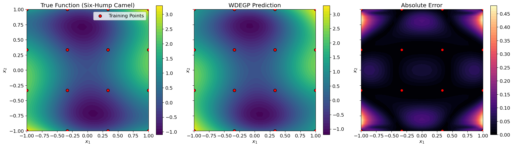
Explanation: The three-panel visualization shows:
Left: True six-hump camel function with multiple local minima
Center: WDEGP prediction using heterogeneous derivative orders
Right: Absolute prediction error
Notice how the error is generally lowest near training points and in regions with higher-order derivative information (center).
—
Step 12: Visualize submodel contributions#
fig, axes = plt.subplots(1, 3, figsize=(18, 5), sharex=True, sharey=True)
submodel_titles = [
"Submodel 1: Corners (No Derivatives)",
"Submodel 2: Edges (1st Order)",
"Submodel 3: Center (2nd Order)"
]
for i, (ax, title) in enumerate(zip(axes, submodel_titles)):
c = ax.contourf(X1_grid, X2_grid,
submodel_vals[i].reshape(test_points_per_axis, test_points_per_axis),
levels=50, cmap="viridis")
fig.colorbar(c, ax=ax)
ax.set_title(title)
# Highlight this submodel's training points
submodel_points = X_train_reordered[sequential_indices[i]]
ax.scatter(submodel_points[:, 0], submodel_points[:, 1],
c='red', s=100, edgecolor='k', linewidths=2, zorder=5)
ax.set_xlabel("$x_1$")
ax.set_ylabel("$x_2$")
ax.set_aspect('equal')
plt.tight_layout()
plt.show()
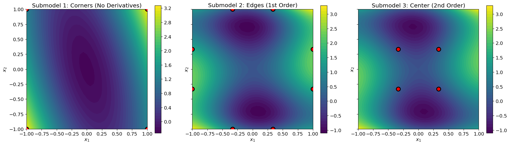
Explanation: This visualization shows how each submodel makes predictions across the entire domain:
Submodel 1 (left): Predictions from corner points only (no derivatives) - smoothest but least accurate
Submodel 2 (center): Predictions from edge points with 1st order derivatives - moderate detail
Submodel 3 (right): Predictions from center points with 2nd order derivatives - highest detail
The final WDEGP prediction is a weighted combination of all three, with weights favoring each submodel near its training points.
—
Summary#
This tutorial demonstrates heterogeneous derivative-enhanced Gaussian Processes (WDEGP) with multiple submodels using different derivative orders:
Key Concepts:
Heterogeneous Derivative Orders: Different submodels use different derivative orders (0th, 1st, 2nd)
SymPy Differentiation: Uses symbolic differentiation for exact derivative computation
Strategic Grouping: Points are grouped based on expected function complexity
Data Reordering: Training data reorganized for contiguous submodel indexing
Shared Function Values: All submodels use function values at ALL training points
Selective Derivatives: Each submodel uses derivatives only at its designated points
Numerical Stability: Uses appropriate step sizes (h=1e-5 for 2nd order) in verification
Workflow Summary:
# 1. Define submodel groups with different characteristics
submodel_point_groups = [
[0, 3, 12, 15], # Corners: simple
[1, 2, 4, 8, 7, 11, 13, 14], # Edges: moderate
[5, 6, 9, 10] # Center: complex
]
# 2. Reorder training data for contiguous indices
X_train_reordered, sequential_indices = reorder_training_data(...)
# 3. Define heterogeneous derivative specifications
derivative_specs = [
[], # Submodel 1: no derivatives
utils.gen_OTI_indices(n_bases, 1), # Submodel 2: 1st order
utils.gen_OTI_indices(n_bases, 2) # Submodel 3: 2nd order
]
# 4. Prepare submodel data with SymPy
submodel_data, derivative_specs = prepare_submodel_data(...)
# 5. Build and optimize WDEGP model
gp_model = wdegp(X_train_reordered, submodel_data, ...)
params = gp_model.optimize_hyperparameters(...)
# 6. Predict with weighted combination
y_pred, submodel_vals = gp_model.predict(X_test, params,
return_submodels=True)
Advantages of this approach:
Computational efficiency: Focus expensive derivatives where most beneficial
Exact derivatives: SymPy provides symbolic, exact derivatives
Flexible: Easy to modify derivative orders per submodel
Numerically stable: Appropriate step sizes for finite difference verification
Interpretable: Can visualize individual submodel contributions